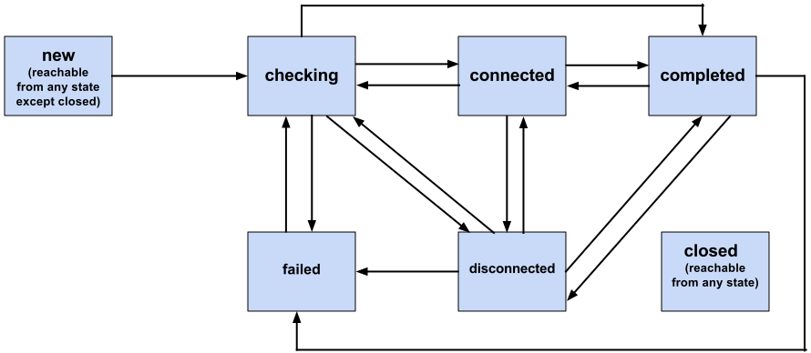

This document defines a set of ECMAScript APIs in WebIDL to allow media to be sent
and received from another browser or device implementing the appropriate set of
real-time protocols. However, unlike the WebRTC 1.0 API, Object Real-Time
Communications (ORTC) does not utilize Session Description Protocol (SDP) in the API,
nor does it mandate support for the Offer/Answer state machine (though an application
is free to choose SDP and Offer/Answer as an on-the-wire signaling mechanism).
Instead, ORTC uses "sender", "receiver" and "transport" objects, which have
"capabilities" describing what they are capable of doing, as well as "parameters"
which define what they are configured to do. "Tracks" are encoded by senders and sent
over transports, then decoded by receivers while "data channels" are sent over
transports directly.
Overview
Object Real-Time Communications (ORTC) provides a powerful API for the development
of WebRTC based applications. ORTC does not utilize Session Description Protocol
(SDP) in the API, nor does it mandate support for the Offer/Answer state machine
(though an application is free to choose SDP and Offer/Answer as an on-the-wire
signaling mechanism). Instead, ORTC uses "sender", "receiver" and "transport"
objects, which have "capabilities" describing what they are capable of doing, as well
as "parameters" which define what they are configured to do. "Tracks" are encoded by
senders and sent over transports, then decoded by receivers while "data channels" are
sent over transports directly.
In a Javascript application utilizing the ORTC API, the relationship between the
application and the objects, as well as between the objects themselves is shown
below. Horizontal or slanted arrows denote the flow of media or data, whereas
vertical arrows denote interactions via methods and events.
Several other objects also play a role. The RTCIceGatherer
(Section 2) gathers local ICE candidates for use by
one or more RTCIceTransport objects, enabling forking scenarios.
The RTCIceTransportController (Section 7) manages freezing/unfreezing (defined in
[[!RFC5245]]) and bandwidth estimation. The RTCRtpListener
(Section 8) detects whether an RTP stream is received
that cannot be delivered to any existing RTCRtpReceiver,
providing an onunhandledrtp event handler that the application can use
to correct the situation. The RTCQuicTransport utilizes an
RTCIceTransport to select a communication path to reach the
receiving peer's RTCIceTransport, which is in turn associated
with an RTCQuicTransport. An RTCQuicTransport
is associated with zero or more RTCQuicStream objects which
read data from and write data to RTCQuicStream objects on the
remote peer.
Remaining sections of the specification fill in details relating to RTP
capabilities and parameters, operational statistics, media authentication via
Certificates and Identity Providers (IdP) and compatibility with the WebRTC 1.0 API.
RTP dictionaries are described in Section 9, the
Statistics API is described in Section 13, the Identity
API is described in Section 14, the Certificate API is
described in Section 15, privacy and security
considerations are described in Section 16,
an event summary is provided
in Section 17, WebRTC 1.0 compatibility issues are
discussed in Section 18, and complete examples are
provided in Section 19.
This specification defines conformance criteria that apply to a single
product: the user agent that implements the interfaces that it
contains.
Conformance requirements phrased as algorithms or specific steps may be
implemented in any manner, so long as the end result is equivalent. In
particular, the algorithms defined in this specification are intended to be
easy to follow, and not intended to be performant.
Implementations that use ECMAScript to implement the APIs defined in
this specification MUST implement them in a manner consistent with the
ECMAScript Bindings defined in the Web IDL specification [[!WEBIDL-1]], as
this specification uses that specification and terminology.
The terms MediaStream, MediaStreamTrack, and
MediaStreamConstraints are defined in [[!GETUSERMEDIA]].
The term RTCStatsType
is defined in [[!WEBRTC-STATS]].
When referring to exceptions, the terms throw and
create are
defined in [[!WEBIDL-1]].
The terms fulfilled, rejected,
resolved, pending and
settled used in the context of Promises are defined in
[[!ECMASCRIPT-6.0]].
The terms isolated stream,
peeridentity, request an identity assertion and
validate the identity are defined in [[!WEBRTC-IDENTITY]].
In this specification the term user agent refers to any
implementation; the term browser specifically refers to browser
implementations.
The RTCIceCredentialType enum is defined in [[!WEBRTC10]]
Section 4.2.2 and the RTCOauthCredential
dictionary is defined in [[!WEBRTC10]] Section 4.2.3.
The RTCQuicTransport interface is defined in [[WEBRTC-QUIC]] Section 4
and the RTCQuicStream interface is defined in [[WEBRTC-QUIC]]
Section 5.
The RTCIdentityProvider dictionary and the
generateAssertion and validateAssertion callbacks are
defined in [[WEBRTC-IDENTITY]] Section 5.1. The RTCIdentityAssertionResult,
RTCIdentityProviderDetails and RTCIdentityValidationResult
dictionaries are defined in [[WEBRTC-IDENTITY]] Section 5.2. The
RTCIdentityProviderOptions dictionary and the
RTCIdentityAssertion interface are defined in
[[WEBRTC-IDENTITY]] Section 9.
Scope
For Scalable Video Coding (SVC), the terms single-session transmission
(SST) and multi-session transmission (MST) are defined in
[[RFC6190]]. This specification only supports SST but not MST. The
term Single Real-time transport protocol stream Single Transport (SRST),
defined in [[RFC7656]] Section 3.7, refers to a Scalable Video Coding
(SVC) implementation that transmits all layers within
a single transport, using a single Real-time Transport Protocol (RTP) stream
and synchronization source (SSRC). The term Multiple RTP stream Single Transport
(MRST), also defined in [[RFC7656]] Section 3.7, refers to an
implementation that transmits all layers within a single transport, using
multiple RTP streams with a distinct SSRC for each layer. This specification
supports SVC codecs that can only utilize SRST transport (such as VP8,
VP9 and AV1) as well as implementations of codecs (such as H.264/SVC or HEVC)
that support SRST transport. Also, sending of simulcast is supported.
Implementations supporting MRST transport (such as H.264/SVC)
can also be supported, along with reception of simulcast. However, these
features should be considered experimental, since implementation
experience is limited.
At the time of publication, there were two ORTC implementations supporting
simulcast reception. Since neither implementation supported [[!RFC6051]],
mechanisms needed to be provided to handle intermingling of received simulcast
streams due to reordering. The ORTC Lib implementation deals with this by
utilizing timing heuristics as well as "hidden" receivers for each received
simulcast stream, with each "hidden" receiver producing a "hidden" track. The
"hidden" tracks are then mixed internally to produce a single
MediaStreamTrackRTCRtpReceiver.track.
RTCIceGatherer Interface
The RTCIceGatherer gathers local host, server reflexive
and relay candidates, as well as enabling the retrieval of local Interactive
Connectivity Establishment (ICE) parameters which can be exchanged in signaling. By
enabling an endpoint to use a set of local candidates to construct multiple
RTCIceTransport objects, the RTCIceGatherer
enables support for scenarios such as parallel forking.
As noted in [[!RFC5245]] Section 7.1.2.2, an incoming connectivity check
contains an ICE-CONTROLLING or ICE-CONTROLLED attribute,
depending on the role of the ICE agent initiating the check. Since an
RTCIceGatherer object does not have a role, it cannot determine
whether to respond to an incoming connectivity check with a 487 (Role Conflict)
error; however, it can validate that an incoming connectivity check utilizes the
correct local username fragment and password, and if not, can respond with an 401
(Unauthorized) error, as described in [[!RFC5389]] Section 10.1.2.
For incoming connectivity checks that pass validation, the
RTCIceGathererMUST
buffer the incoming connectivity checks so as to be able to provide them to
associated RTCIceTransport objects so that they can
respond.
To validate the options argument in the
RTCIceGatherer constructor, implementations MUST run
the following steps:
Let options be the argument passed in the constructor.
Let servers be the value of
options.iceServers.
Let validatedServers be an empty list.
Run the following steps for each element in servers:
Let server be the current list element.
If server.urls is a string,
let server.urls be a list
consisting of just that string.
For each url in
server.urls run the following steps:
Parse the url using the generic URI syntax
defined in [[!RFC3986]] and obtain the
scheme name. If the parsing based
on the syntax defined in [[!RFC3986]] fails,
throw a SyntaxError. If
the scheme name is not implemented
by the browser throw a
NotSupportedError. If
scheme name is turn or
turns, and parsing the
url using the syntax defined in
[[!RFC7064]] fails, throw a
SyntaxError. If scheme
name is stun or
stuns, and parsing the
url using the syntax defined in
[[!RFC7065]] fails, throw a
SyntaxError.
If scheme name is turn or
turns, and either of
server.username or
server.credential are omitted,
then throw an InvalidAccessError.
If scheme name is turn or
turns, and
server.credentialType is
"password", and
server.credential is not a
DOMString, then
throw an InvalidAccessError and abort these
steps.
If scheme name is turn or
turns, and
server.credentialType is
"oauth", and
server.credential is not an
RTCOAuthCredential, then throw an
InvalidAccessError and abort these steps.
This event handler, of event handler event type
icecandidateerror, MUST be fired if an error occurs in the gathering of ICE
candidates (such as if TURN credentials are invalid).
This event handler, of event handler event type
icecandidate, uses the
RTCIceGathererEvent interface.
It receives events when a new local ICE candidate
is available. Since ICE candidate gathering begins
once an RTCIceGatherer object is
created, candidate events are queued
until an onlocalcandidate event handler
is assigned. When the final candidate is gathered,
a candidate event occurs with an
RTCIceCandidateComplete emitted.
Methods
getDefaultIceServers
Returns a list of ICE servers that are configured into the
browser. A browser might be configured to use local or private
STUN or TURN servers. This method allows an application to learn
about these servers and optionally use them.
This list is likely to be persistent and
is the same across origins. It thus increases the
fingerprinting surface of the browser. In privacy-sensitive
contexts, browsers can consider mitigations such as only
providing this data to whitelisted origins (or not providing it
at all.)
Since the use of this information is left to
the discretion of application developers, configuring a user
agent with these defaults does not per se increase a user's
ability to limit the exposure of their IP addresses.
close
Prunes all local candidates, and closes the port. Associated
RTCIceTransport objects transition to the
disconnected state (unless they were in the
failed state). Calling close() when
state is closed has no effect.
No parameters.
Return type:undefined
gather
Gather ICE candidates. If options is omitted, utilize the
value of options passed in the constructor. If
state is closed, throw an
InvalidStateError.
Retrieve the sequence of valid local candidates associated with the
RTCIceGatherer. This retrieves all unpruned local
candidates currently known (except for peer reflexive candidates), even if
an onlocalcandidate event hasn't been processed yet.
Prior to calling gather() an empty list will be
returned. If state is closed, throw an
InvalidStateError.
If only ICE-lite is supported (true) or not
(false or unset). Since [[!RTCWEB-TRANSPORT]] Section 3.4
requires browser support for full ICE, iceLite will
only be true for a remote peer such as a gateway.
getLocalParameters().iceLite MUST NOT be set.
RTCIceCandidate Dictionary
The RTCIceCandidate dictionary includes information relating
to an ICE candidate.
For candidates that are derived from others, such as relay or reflexive
candidates, the relatedAddress refers to the
candidate that these are derived from. For host candidates, the
relatedAddress is unset.
For candidates that are derived from others, such as relay or reflexive
candidates, the relatedPort refers to the host
candidate that these are derived from. For host candidates, the
relatedPort is unset.
RTCIceProtocol Enum
The RTCIceProtocol includes the protocol of the ICE
candidate.
enum RTCIceProtocol {
"udp",
"tcp"
};
Enumeration description
udp
A UDP candidate, as described in [[!RFC5245]].
tcp
A TCP candidate, as described in [[!RFC6544]].
RTCIceTcpCandidateType Enum
The RTCIceTcpCandidateType includes the type of the
ICE TCP candidate, as described in [[!RFC6544]]. Browsers MUST gather active TCP
candidates and only active TCP candidates. Servers and other endpoints MAY gather
active, passive or so candidates.
The object has been created but gather() has not been
called.
gathering
gather() has been called, and the
RTCIceGatherer is in the process of gathering
candidates (which includes adding new candidates and removing invalidated
candidates).
complete
The RTCIceGatherer has completed gathering. Events
such as adding, updating or removing an interface, or adding, changing or
removing a TURN server will cause the state to go back to
gathering before re-entering complete once all
candidate changes are finalized.
closed
The closed state can only be entered when
the RTCIceGatherer has been closed
intentionally by calling close(). This is a
terminal state.
The RTCIceCandidate used to communicate with the
STUN or TURN server. On a multihomed system, multiple interfaces may be
used to contact the server, and this attribute allows the application to
figure out on which one the failure occurred. If the browser is in a
privacy mode disallowing host candidates, this attribute will be null.
If use of multiple interfaces has been prohibited for privacy reasons,
hostCandidate will be null.
The errorCode attribute is the numeric STUN error
code returned by the STUN or TURN server [[STUN-PARAMETERS]].
If no host candidate can reach the server, errorCode
will be set to a value of 701, as this does not conflict with the STUN
error code range, and hostCandidate will be null. This
error is only fired once per server URL while in the
RTCIceGathererState of gathering.
Firing an RTCIceGathererEvent event named e with
an RTCIceGatherCandidatecandidate and
URL url means that an event with the name e, which does
not bubble (except where otherwise stated) and is not cancelable (except
where otherwise stated), and which uses the RTCIceGathererEvent
interface with the candidate attribute set to the new ICE candidate,
MUST be created and dispatched at the given
target.
The candidate attribute is the
RTCIceGatherCandidate object with the new ICE candidate
that caused the event. If candidate is of type
RTCIceCandidateComplete, there are no additional
candidates.
Additional ICE servers to be configured. Since implementations MAY
provide default ICE servers, and applications can desire to restrict
communications to the local LAN, iceServers need not be set.
RTCIceGatherPolicy Enum
RTCIceGatherPolicy denotes the policy relating to the
gathering of ICE candidates.
enum RTCIceGatherPolicy {
"all",
"relay"
};
Enumeration description
all
The RTCIceGatherer MAY gather any type of
candidate when this value is specified.
The implementation may still use its own candidate
filtering policy in order to limit the IP addresses
exposed to the application.
relay
The RTCIceGatherer MUST only gather media relay
candidates such as candidates passing through a TURN server.
This can be used to prevent the remote endpoint from learning
the user's IP addresses, which may be desired in certain
use cases. For example, in a "call"-based application, the
application may want to prevent an unknown caller from
learning the callee's IP addresses until the callee has
consented in some way.
RTCIceServer Dictionary
The RTCIceServer dictionary is used to configure the
STUN and/or TURN servers. In network topologies with multiple layers of NATs,
it is desirable to have a STUN server between every layer of NATs in addition
to the TURN servers to minimize the peer to peer network latency.
dictionary RTCIceServer {
required (DOMString or sequence<DOMString>) urls;
DOMString username;
(DOMString or RTCOAuthCredential) credential;
RTCIceCredentialType credentialType = "password";
};
If this RTCIceServer object represents a
TURN server, then this attribute specifies the credential to
use with that TURN server.
If credentialType is "password",
credential is a DOMString, and represents a
long-term authentication password, as described in
[[!RFC5389]], Section 10.2.
If credentialType is "oauth",
credential is a RTCOAuthCredential, which
contains the OAuth access token and MAC key.
If this RTCIceServer object represents a TURN
Server, then this attribute specifies how credential
should be used when that TURN server requests authorization.
// Example to demonstrate use of RTCIceCandidateComplete
// Include some helper functions
import {trace, errorHandler, mySendLocalCandidate, myIceGathererStateChange,
myIceTransportStateChange, myDtlsTransportStateChange} from 'helper';
// Create ICE gather options
var gatherOptions = {
gatherPolicy: "relay",
iceServers: [
{ urls: "stun:stun1.example.net" },
{ urls: "turn:turn.example.org", username: "user", credential: "myPassword",
credentialType: "password" }
]
};
// Create IceGatherer object
var iceGatherer = new RTCIceGatherer(gatherOptions);
// Handle state changes
iceGatherer.onstatechange = function(event) {
myIceGathererStateChange("iceGatherer", event.state);
};
// Prepare to signal local candidates
iceGatherer.onlocalcandidate = function(event) {
mySendLocalCandidate(event.candidate);
};
// Start gathering
iceGatherer.gather();
// Set up response function
mySignaller.onResponse = function(responseSignaller, response) {
// We may get N responses
// ... deal with the N responses as shown in Example 5 of Section 3.11.
};
mySignaller.send({
ice: iceGatherer.getLocalParameters()
});
// Helper functions used in all the examples (helper.js)
export function trace(text) {
// This function is used for logging.
text = text.trimRight();
if (window.performance) {
var now = (window.performance.now() / 1000).toFixed(3);
console.log(now + ": " + text);
} else {
console.log(text);
}
}
export function errorHandler(error) {
trace("Error encountered: " + error.name);
}
export function mySendLocalCandidate(candidate, component, kind, parameters) {
// Set default values
kind = kind || "all";
component = component || "rtp";
parameters = parameters || null;
// Signal the local candidate
mySignaller.mySendLocalCandidate({
candidate: candidate,
component: component,
kind: kind,
parameters: parameters
});
}
export function myIceGathererStateChange(name, state) {
switch (state) {
case "new":
trace("IceGatherer: " + name + " Has been created");
break;
case "gathering":
trace("IceGatherer: " + name + " Is gathering candidates");
break;
case "complete":
trace("IceGatherer: " + name + " Has finished gathering (for now)");
break;
case "closed":
trace("IceGatherer: " + name + " Is closed");
break;
default:
trace("IceGatherer: " + name + " Invalid state");
}
}
export function myIceTransportStateChange(name, state) {
switch (state) {
case "new":
trace("IceTransport: " + name + " Has been created");
break;
case "checking":
trace("IceTransport: " + name + " Is checking");
break;
case "connected":
trace("IceTransport: " + name + " Is connected");
break;
case "disconnected":
trace("IceTransport: " + name + " Is disconnected");
break;
case "completed":
trace("IceTransport: " + name + " Has finished checking (for now)");
break;
case "failed":
trace("IceTransport: " + name + " Has failed");
break;
case "closed":
trace("IceTransport: " + name + " Is closed");
break;
default:
trace("IceTransport: " + name + " Invalid state");
}
}
export function myDtlsTransportStateChange(name, state){
switch(state){
case "new":
trace('DtlsTransport: ' + name + ' Has been created');
break;
case "connecting":
trace('DtlsTransport: ' + name + ' Is connecting');
break;
case "connected":
trace('DtlsTransport: ' + name + ' Is connected');
break;
case "failed":
trace('DtlsTransport: ' + name + ' Has failed');
break;
case "closed":
trace('DtlsTransport: ' + name + ' Is closed');
break;
default:
trace('DtlsTransport: ' + name + ' Invalid state');
}
}
RTCIceTransport Interface
The RTCIceTransport allows an application access to
information about the Interactive Connectivity Establishment (ICE) transport over
which packets are sent and received. In particular, ICE manages peer-to-peer
connections which involve state which the application may want to access.
Overview
An RTCIceTransport instance is associated to a transport
object (such as RTCDtlsTransport), and provides RTC related
methods to it.
Operation
An RTCIceTransport instance is constructed (optionally) from
an RTCIceGatherer. An RTCIceTransport object
in the closed state can be garbage-collected when it is no longer referenced.
Retrieve the sequence of candidates associated with the remote
RTCIceTransport. Only returns the candidates previously
added using setRemoteCandidates() or
addRemoteCandidate(). If there are no remote
candidates, an empty list is returned.
Retrieves the selected candidate pair on which packets are sent. If
there is no selected pair yet, or consent [[!RFC7675]] is lost on the
selected pair, NULL is returned.
As noted in [[!RFC5245]] Section 7.1.2.3, an incoming connectivity check
utilizes the local/remote username fragment and the local password, whereas
an outgoing connectivity check utilizes the local/remote username fragment
and the remote password. Since start() provides role
information, as well as the remote username fragment and password, once
start() is called an RTCIceTransport
object can respond to incoming connectivity checks based on its
configured role. Since start() enables candidate pairs
to be formed, it also enables initiating connectivity checks.
When start() is called, the following
steps MUST be run:
If gatherer.component has a value
different from component, throw an
InvalidParameters.
If state or gatherer.state
is closed, throw an InvalidStateError.
If remoteParameters.usernameFragment
or remoteParameters.password is unset,
throw an InvalidParameters.
If start() is called again and
role is changed, throw an
InvalidParameters.
If start() is called again with the same
values of gatherer and
remoteParameters, this has
no effect.
If start() is called for the first time
and either gatherer was not
passed in the constructor or the value of
gatherer is unchanged, if
there are remote candidates, set state
to checking and start connectivity checks.
If there are no remote candidates, state
remains new.
If start() is called for the first time
and the value of gatherer
passed as an argument is different from that passed
in the constructor, flush local candidates. If there
are remote candidates, set state to
checking and start connectivity checks.
If there are no remote candidates, state
remains new.
If start() is called again with the same
value of gatherer but the value
of remoteParameters has changed,
local candidates are kept, remote candidates are flushed,
candidate pairs are flushed and state
transitions to new.
If start() is called again with a new value
of gatherer but the value of
remoteParameters is unchanged,
local candidates are flushed, candidate pairs are flushed,
new candidate pairs are formed with existing remote candidates,
and state transitions to checking.
If start() is called again with new values of
gatherer and
remoteParameters, local
candidates are flushed, remote candidates are flushed,
candidate pairs are flushed and state transitions
to new.
Create an associated RTCIceTransport for RTCP. If
called more than once for the same component, or if state is
closed, throw an InvalidStateError. If
called when component is rtcp, throw
an InvalidStateError.
Add a remote candidate associated with the remote
RTCIceTransport. If state is
closed, throw an InvalidStateError.
When the remote RTCIceGatherer emits its final
candidate, addRemoteCandidate() should be called with
an RTCIceCandidateComplete dictionary as an argument,
so that the local RTCIceTransport can know there are no
more remote candidates expected, and can enter the completed
state.
RTCIceComponent contains the component-id of the
RTCIceTransport, which will be rtp unless RTP and
RTCP are not multiplexed and the RTCIceTransport object was
returned by createAssociatedTransport().
enum RTCIceComponent {
"rtp",
"rtcp"
};
Enumeration description
rtp
The RTP component ID, defined (as '1') in [[!RFC5245]] Section
4.1.1.1. Protocols multiplexed with RTP (e.g. SCTP data channel) share
its component ID.
rtcp
The RTCP component ID, defined (as '2') in [[!RFC5245]] Section
4.1.1.1.
RTCIceRole Enum
RTCIceRole contains the current role of the ICE
transport.
enum RTCIceRole {
"controlling",
"controlled"
};
Enumeration description
controlling
controlling state
controlled
controlled state
RTCIceTransportState Enum
RTCIceTransportState represents the current state of the
ICE transport.
The RTCIceTransport object is waiting for remote
candidates to be supplied. In this state the
RTCIceTransport object can respond to incoming
connectivity checks.
checking
The RTCIceTransport has received at least one
remote candidate, and a local and remote
RTCIceCandidateComplete dictionary was not added as
the last candidate. In this state the RTCIceTransport
is checking candidate pairs but has not yet found a successful candidate
pair, or consent checks [[!RFC7675]] have failed on all previously
successful candidate pairs.
connected
The RTCIceTransport has received a response to an
outgoing connectivity check, or has received incoming DTLS/media after a
successful response to an incoming connectivity check, but is still
checking other candidate pairs to see if there is a better connection. In
this state outgoing media is permitted. If consent checks [[!RFC7675]]
fail on the connection in use, and there are no other successful
candidate pairs available, then the state transitions to
checking (if there are candidate pairs remaining to be
checked) or disconnected (if there are no candidate pairs to
check, but the peer is still gathering and/or waiting for additional
remote candidates).
completed
A local and remote RTCIceCandidateComplete
dictionary was added as the last candidate to the
RTCIceTransport and all appropriate candidate pairs
have been tested and at least one functioning candidate pair has been
found. If consent checks [[!RFC7675]] subsequently fail on all successful
candidate pairs, the state transitions to failed.
disconnected
Connectivity is currently lost for this RTCIceTransport.
The RTCIceTransport has received at least one
local and remote candidate, and a local and remote
RTCIceCandidateComplete dictionary was not added as
the last candidate, but all appropriate candidate pairs thus far have
been tested and failed, or consent checks [[!RFC7675]] once successful,
have repeatedly failed to receive a response. At the implementation's
discretion, this state may be entered prior to consent failure, and
therefore could resolve itself without action. Other candidate pairs
may become available for testing as new candidates are trickled,
and a temporary consent failure could resolve itself, therefore
the failedstate has not been reached.
failed
A local and remote RTCIceCandidateComplete
dictionary was added as the last candidate to the
RTCIceTransport and all appropriate candidate pairs
have either failed connectivity checks or have lost consent.
closed
The RTCIceTransport has shut down and is no longer
responding to STUN requests.
Some example transitions might be:
new RTCIceTransport(): new
(new, remote candidates received): checking
(checking, found usable connection): connected
(checking, checks fail but gathering still in progress):
disconnected
(checking, gave up): failed
(disconnected, new local candidates): checking
(connected, finished all checks): completed
(completed, lost connectivity): disconnected
(any state, ICE restart occurs): new
close(): closed

Non-normative ICE transport state transition diagram
// Example to demonstrate forking when RTP and RTCP are not multiplexed,
// so that both RTP and RTCP IceGatherer and IceTransport objects are needed.
// Include some helper functions
import {trace, errorHandler, mySendLocalCandidate, myIceGathererStateChange,
myIceTransportStateChange, myDtlsTransportStateChange} from 'helper';
// Create ICE gather options
var gatherOptions = {
gatherPolicy: "relay",
iceServers: [
{ urls: "stun:stun1.example.net" },
{ urls: "turn:turn.example.org", username: "user", credential: "myPassword",
credentialType: "password" }
]
};
// Create ICE gatherer objects
var iceRtpGatherer = new RTCIceGatherer(gatherOptions);
var iceRtcpGatherer = iceRtpGatherer.createAssociatedGatherer();
// Prepare to signal local candidates
iceRtpGatherer.onlocalcandidate = function(event) {
mySendLocalCandidate(event.candidate, "rtp", "audio",
iceRtpGatherer.getLocalParameters());
};
iceRtcpGatherer.onlocalcandidate = function(event) {
mySendLocalCandidate(event.candidate, "rtcp", "audio",
iceRtpGatherer.getLocalParameters());
};
// Start gathering
iceRtpGatherer.gather();
iceRtcpGatherer.gather();
// Initialize the ICE transport arrays
var iceRtpTransports = [];
var iceRtcpTransports = [];
// Set up response function
mySignaller.onResponse = function(responseSignaller, response) {
// We may get N responses
// Create the ICE RTP and RTCP transports
var iceRtpTransport = new RTCIceTransport(iceRtpGatherer);
var iceRtcpTransport = iceRtpTransport.createAssociatedTransport();
// Start the RTP and RTCP ICE transports so that outgoing ICE connectivity checks can begin
// The RTP and RTCP ICE parameters are the same, so only the RTP parameters are used
iceRtpTransport.start(iceRtpGatherer, response.icertp, RTCIceRole.controlling);
iceRtcpTransport.start(iceRtcpGatherer, response.icertp, RTCIceRole.controlling);
iceRtpTransports.push(iceRtpTransport);
iceRtcpTransports.push(iceRtcpTransport);
// Prepare to add ICE candidates signalled by the remote peer
responseSignaller.onRemoteCandidate = function(remote) {
// Locate the ICE transport that the signaled candidate relates to by matching
// the userNameFragment.
var transports;
if (remote.component === "rtp") {
transports = iceRtpTransports;
} else {
transports = iceRtcpTransports;
}
for (var j = 0; j < iceTransport.length; j++) {
var transport = transports[j];
if (transport.getRemoteParameters().userNameFragment === remote.parameters.userNameFragment)
transport.addRemoteCandidate(remote.candidate);
}
}
};
};
mySignaller.send({
// The RTP and RTCP parameters are identical, so no need to send both
icertp: iceRtpGatherer.getLocalParameters()
});
RTCDtlsTransport Interface
The RTCDtlsTransport object includes information relating
to Datagram Transport Layer Security (DTLS) transport.
A RTCDtlsTransport instance is constructed
using an RTCIceTransport and a sequence of
RTCCertificate objects. Although any given DTLS
connection will use only one certificate, multiple certificates can be provided
that support different algorithms. The final certificate will be selected
based on the DTLS handshake, which establishes which certificates are allowed.
An RTCDtlsTransport object in the closed or
failed states can be garbage-collected when it is no longer
referenced.
Since the Datagram
Transport Layer Security (DTLS) negotiation occurs between transport endpoints
determined via ICE, implementations of this specification MUST support multiplexing of STUN, TURN, DTLS and RTP and/or
RTCP. This multiplexing, originally described in [[!RFC5764]] Section 5.1.2, is
updated in [[!RFC7983]].
A newly constructed RTCDtlsTransportMUST listen and respond to incoming DTLS packets before
start() is called. However, to complete the negotiation it is
necessary to verify the remote fingerprint, which is an attribute of the
remoteParameters argument passed to start().
To verify the remote fingerprint, compute the fingerprint value for
the selected remote certificate using the signature digest algorithm, and compare
it against remoteParameters.fingerprints. If the selected
remote certificate RTCDtlsFingerprint.value matches
remoteParameters.fingerprints[j].value and
RTCDtlsFingerprint.algorithm matches
remoteParameters.fingerprints[j].algorithm for any value of
j, the remote fingerprint is verified. After the DTLS handshake exchange
completes (but before the remote fingerprint is verified) incoming media packets
may be received. A modest buffer MUST be
provided to avoid loss of media prior to remote fingerprint validation (which can
begin after start() is called).
When the constructor is invoked, the following steps MUST be run:
Let transport be the first argument.
If transport.state is closedthrow an InvalidStateError and abort these steps.
Let certificates be the second argument.
If certificates is non-null, check that the
expires attribute of each RTCCertificate
object is in the future. If a certificate has expired, throw an
InvalidParameters and abort these steps.
Let dtlsTransport be a new RTCDtlsTransport
object with certificates.
Let dltsTransport have
[[\SendHeaderExtensions]] and [[\ReceiveHeaderExtensions]]
internal slots initialized to null.
This event handler, of event handler event type error,
MUST be fired after a DTLS
error. An implementation SHOULD provide more details on DTLS errors as follows:
A fingerprint validation failure is indicated by setting
error.name to "fingerprint-failure".
Reception of a DTLS alert is indicated by setting
error.name to "dtls-alert-received".
Sending of a DTLS alert is indicated by setting error.name
to "dtls-alert-sent".
The DTLS alert value is provided by setting error.message
(defined in [[!HTML5]] Section 6.1.3.6.2) to "DTLS Alert: ".
Methods
getCertificates()
Returns the certificates provided in the constructor.
No parameters.
Return type:sequence<RTCCertificate>
getLocalParameters()
Obtains the DTLS parameters of
the local RTCDtlsTransport upon construction.
If multiple certificates were provided in the constructor, then
multiple fingerprints will be returned, one for each certificate.
getLocalParameters().role always returns the default
role of a newly constructed RTCDtlsTransport;
for a browser this will be auto.
Returns the certificate chain in use
by the remote side, with each certificate encoded in binary Distinguished
Encoding Rules (DER) [[!X690]]. getRemoteCertificates()
returns an empty list prior to selection of the remote certificate, which
is completed by the time state transitions to connected.
No parameters.
Return type:sequence<ArrayBuffer>
start
Start DTLS transport negotiation with the parameters of the remote DTLS
transport, including verification of the remote fingerprint, then once the
DTLS transport session is established, negotiate a DTLS-SRTP
[[!RFC5764]] session to establish keys so as protect media using SRTP
[[!RFC3711]]. Since symmetric RTP [[!RFC4961]] is utilized, the
DTLS-SRTP session is bi-directional.
Only a single DTLS transport can be multiplexed over an ICE transport.
Therefore if a RTCDtlsTransport object
dtlsTransportB is constructed with an
RTCIceTransport object iceTransport
previously used to construct another RTCDtlsTransport
object dtlsTransportA, then if
dtlsTransportB.start() is called prior to having called
dtlsTransportA.stop(), then throw an
InvalidStateError.
If start is called after a previous start
call, or if state is closed, throw
an InvalidStateError.
If all of the values of
remoteParameters.fingerprints[j].algorithm
are unsupported, where j goes from 0 to the number of fingerprints,
throw a NotSupportedError.
One of the the hash function algorithms defined in the 'Hash function
Textual Names' registry, initially specified in [[!RFC4572]] Section 8. As
noted in [[!JSEP]] Section 5.2.1, the digest algorithm used for the
fingerprint matches that used in the certificate signature.
RTCDtlsRole indicates the role of the DTLS
transport.
enum RTCDtlsRole {
"auto",
"client",
"server"
};
Enumeration description
auto
The DLTS role is determined based on the resolved ICE role:
the ICE controlled role acts as the DTLS client and
the ICE controlling role acts as the DTLS server.
client
The DTLS client role.
server
The DTLS server role.
DTLS role determination
To diagnose DTLS role issues, an application may wish to determine
the desired and actual DTLS role of an RTCDtlsTransport.
For a browser implementing ORTC, a RTCDtlsTransport
object assumes a DTLS role of auto upon construction.
This implies that the DTLS role is determined by the ICE role. Since
getLocalParameters().role always returns the role assigned
to an RTCDtlsTransport object upon construction
(auto for a browser), the getLocalParameters
method cannot be used to determine the desired or actual role of an
RTCDtlsTransport.
An application can determine the
desired role of an RTCDtlsTransport from the value of
remoteParameters.role passed to
RTCDtlsTransport.start(remoteParameters).
If remoteParameters.role is server
then the desired role of the RTCDtlsTransport
is client. If remoteParameters.role
is client then the desired role of the
RTCDtlsTransport is server.
The RTCDtlsTransport.transport.onstatechange EventHandler
can be used to determine whether an RTCDtlsTransport
transitions to the desired role as expected. When
RTCDtlsTransport.transport.state transitions to
connected, if RTCDtlsTransport.transport.role
is controlled then the role of the
RTCDtlsTransport is client.
If RTCDtlsTransport.transport.role
is controlling then the role of the
RTCDtlsTransport is server.
RTCDtlsTransportState Enum
RTCDtlsTransportState indicates the state of the DTLS
transport.
The RTCDtlsTransport object has been created and
has not started negotiating yet.
connecting
DTLS is in the process of negotiating a secure connection and
verifying the remote fingerprint. Once a secure connection is negotiated
(but prior to verification of the remote fingerprint, enabled by calling
start()), incoming data can flow through (and media, once
DTLS-SRTP key derivation is completed).
connected
DTLS has completed negotiation of a secure connection and verified the
remote fingerprint. Outgoing data and media can now flow through.
closed
The DTLS connection has been closed intentionally via a call to
stop() or receipt of a close_notify alert. Calling
transport.stop() will also result in a transition to the
closed state.
failed
The DTLS connection has been closed as the result of an error (such as
receipt of an error alert or a failure to validate the remote
fingerprint).
Examples
// This is an example of how to offer ICE and DTLS parameters and
// ICE candidates and get back ICE and DTLS parameters and ICE candidates,
// and start both ICE and DTLS, when RTP and RTCP are multiplexed.
// Assume that we have a way to signal (mySignaller).
// Include some helper functions
import {trace, errorHandler, mySendLocalCandidate, myIceGathererStateChange,
myIceTransportStateChange, myDtlsTransportStateChange} from 'helper';
function initiate(mySignaller) {
// Prepare the ICE gatherer
var gatherOptions = {
gatherPolicy: "all",
iceServers: [
{ urls: "stun:stun1.example.net" },
{ urls: "turn:turn.example.org", username: "user", credential: "myPassword",
credentialType: "password" }
]
};
var iceGatherer = new RTCIceGatherer(gatherOptions);
iceGatherer.onlocalcandidate = function(event) {
mySignaller.mySendLocalCandidate(event.candidate);
};
// Start gathering
iceGatherer.gather();
// Initialize the ICE and DTLS transport arrays
var iceTransports = [];
var dtlsTransports = [];
// Create the DTLS certificate and parameters
var certs;
var dtlsParameters = {};
var keygenAlgorithm = { name: "ECDSA", namedCurve: "P-256" };
RTCCertificate.generateCertificate(keygenAlgorithm).then(function(certificate){
certs[0] = certificate;
// Obtain the fingerprint of the created certificate
dtlsParameters.fingerprints[0] = certificate.fingerprint;
}, function(){
trace('Certificate could not be created');
});
// Prepare to handle remote ICE candidates
mySignaller.onRemoteCandidate = function(remote) {
// Figure out which IceTransport a remote candidate relates to by matching
// the userNameFragment/password
var j = 0;
for (j = 0; j < iceTransport.length; j++) {
var transport = iceTransports[j];
if (transport.getRemoteParameters().userNameFragment === remote.parameters.userNameFragment)
transport.addRemoteCandidate(remote.candidate);
}
} };
// ... construct RtpSender/RtpReceiver objects as in Section 6.6 Examples 8 and 9.
mySignaller.mySendInitiate({
ice: iceGatherer.getLocalParameters(),
dtls: dtlsParameters,
// ... marshall RtpSender/RtpReceiver capabilities as in Section 6.6 Examples 8 and 9.
}, function(remote) {
// Create the ICE and DTLS transports
var iceTransport = new RTCIceTransport(iceGatherer);
iceTransport.start(iceGatherer, remote.ice, RTCIceRole.controlling);
iceTransports.push(iceTransport);
// Construct a RTCDtlsTransport object with the same certificate and fingerprint
// as in the Offer so that the remote peer can verify it.
var dtlsTransport = new RTCDtlsTransport(iceTransport, certs);
dtlsTransport.start(remote.dtls);
dtlsTransports.push(dtlsTransport);
// ... configure RtpSender/RtpReceiver objects as in Section 6.6 Examples 8 and 9.
});
}
// This is an example of how to answer with ICE and DTLS
// and DTLS parameters and ICE candidates and start both ICE and DTLS,
// assuming that RTP and RTCP are multiplexed.
// Include some helper functions
import {trace, errorHandler, mySendLocalCandidate, myIceGathererStateChange,
myIceTransportStateChange, myDtlsTransportStateChange} from 'helper';
// Assume that remote info is signalled to us.
function accept(mySignaller, remote) {
// Prepare the ICE gatherer
var gatherOptions = {
gatherPolicy: "all",
iceServers: [
{ urls: "stun:stun1.example.net" },
{ urls: "turn:turn.example.org", username: "user", credential: "myPassword",
credentialType: "password" }
]
};
var iceGatherer = new RTCIceGatherer(gatherOptions);
iceGatherer.onlocalcandidate = function(event) {
mySignaller.mySendLocalCandidate(event.candidate);
};
// Start gathering
iceGatherer.gather();
// Create the DTLS certificate
var certs;
var keygenAlgorithm = { name: "ECDSA", namedCurve: "P-256" };
RTCCertificate.generateCertificate(keygenAlgorithm).then(function(certificate){
certs[0] = certificate;
}, function(){
trace('Certificate could not be created');
});
// Create ICE and DTLS transports
var ice = new RTCIceTransport(iceGatherer);
var dtls = new RTCDtlsTransport(ice, certs);
// Prepare to handle remote candidates
mySignaller.onRemoteCandidate = function(remote) {
ice.addRemoteCandidate(remote.candidate);
};
// ... create RtpSender/RtpReceiver objects as in Section 6.6 Examples 8 and 9.
mySignaller.mySendAccept({
ice: iceGatherer.getLocalParameters(),
dtls: dtls.getLocalParameters()
// ... marshall RtpSender/RtpReceiver capabilities as in Section 6.6 Examples 8 and 9.
});
// Start the ICE transport with an implicit gather policy of "all"
ice.start(iceGatherer, remote.ice, RTCIceRole.controlled);
// Start the DTLS transport
dtls.start(remote.dtls);
// ... configure RtpSender/RtpReceiver objects as in Section 6.6 Examples 8 and 9.
}
RTCRtpSender Interface
The RTCRtpSender includes information relating to the RTP
sender.
The associated MediaStreamTrack instance.
If track is ended, or if
track.muted is set to true,
the RTCRtpSender sends silence (audio) or a black
frame (video). If track is set to null then
the RTCRtpSender does not send RTP.
The RTCDtlsTransport instance over which RTCP is
sent and received (if provided). When BUNDLE is used, many
RTCRtpSender objects will share one
rtcpTransport and will all send and receive RTCP over the same
RTCDtlsTransport. When RTCP mux is used,
rtcpTransport will be null, and both RTP and RTCP traffic will
flow over the RTCDtlsTransporttransport.
The associated RTCP RTCDtlsTransport instance if one
was provided in the constructor. When RTCP mux is used,
rtcpTransport will be null, and both RTP and RTCP traffic will
flow over the RTCDtlsTransporttransport.
The onssrcconflict event handler, of event
handler type RTCSsrcConflictEvent, is fired if an SSRC
conflict is detected within the RTP session or an SSRC misconfiguration is
detected after send() or receive()
returns or when setTransport is called. In this
situation, the RTCRtpSender automatically sends an RTCP
BYE on the conflicted SSRC, if RTP packets were sent using that SSRC.
Methods
setTransport()
Attempts to replace the the RTP RTCDtlsTransporttransport (if set) and RTCP RTCDtlsTransportrtcpTransport (if used) with the transport(s) provided.
When the setTransport method is invoked, the user
agent MUST run the following steps:
Let sender be the RTCRtpSender object
on which setTransport() is invoked.
If sender's [[\SenderStopped]] slot is true,
throw an InvalidStateError and abort these steps.
Let withTransport and withRtcpTransport
be the arguments to this method.
If withTransport is null and
withRtcpTransport is set, throw an
OperationError and abort these steps.
If withTransport is set and
withTransport.transport.component is
rtcp, throw an InvalidParameters.
If withRtcpTransport is set and
withRtcpTransport.transport.component is
rtp, throw an InvalidParameters.
If withTransport is set and
withTransport.state is
closed, throw an InvalidStateError.
If withRtcpTransport is set and
withRtcpTransport.state is
closed, throw an InvalidStateError.
Set transport to withTransport and
rtcpTransport to withRtcpTransport.
If transport is set and transport.state
is not failed, seamlessly send over the new transport(s).
setTrack Attempts to replace the track being sent with another track
provided (or with a null track). The deprecated setTrack
method operates identically to the replaceTrack method.
If withTrack is non-null and
withTrack.kind differs from
sender.kind, rejectp with a newly created TypeError.
Run the following steps:
Set the track attribute to
withTrack. If withTrack is null,
the sender stops sending. Otherwise, have the sender
seamlessly switch to transmitting
withTrack in place of what it is sending.
Obtains the sender capabilities,
based on kind. Browsers
MUST support kind values of "audio"
and "video". If there are no capabilities
corresponding to the value of kind,
getCapabilities returns null. Capabilities
that can apply to multiple values of kind
(such as retransmission [[!RFC4588]], redundancy [[RFC2198]]
and Forward Error Correction) have
RTCRtpCapabilities.RTCRtpCodecCapability[i].kind
set to the value of the kind argument.
Let parameters be the argument provided to
sender.send(parameters) the
last time it was invoked.
Stop sending media with sender.
Send an RTCP BYE for each SSRC in
parameters.encodings[i].ssrc,
parameters.encodings[i].fec.ssrc and
parameters.encodings[i].rtx.ssrc
where i goes from 0 to encodings.length-1.
To Complete validation checks on the argument to send or receive,
the User Agent MUST run the following steps:
Let withParameters be the argument to send or receive.
For send, let kind be the value of track.kind and let
sender be the RTCRtpSender on which the send method is invoked.
For receive, let kind be the first argument passed to the
RTCRtpReceiver constructor and let receiver be the
RTCRtpReceiver on which the receive method is invoked.
For send, let transport be the value of sender.transport.
Let capabilities be the value of RTCRtpSender.getCapabilities(kind).
For receive, let transport be the value of receiver.transport.
Let capabilities be the value of RTCRtpReceiver.getCapabilities(kind).
For each value of i from 0 to the number of codecs, check
that each value of withParameters.codecs[i].payloadType is
set. If any value is unset, rejectp with a newly created
TypeError and abort all of these steps.
For each value of i from 0 to the number of codecs:
Let codec be withParameters.codecs[i].
Let clockRate be codec.clockRate.
Let name be codec.name.
If name or clockrate is unset, throw a
TypeError and abort all of these steps.
If name is not equal to "red", "rtx" or a forward
error correction codec ("ulpfec" [[RFC5109]] or "flexfec" [[FLEXFEC]]),
check whether name is equal to
capabilities.codecs[j].name and
if capabilities.codecs[j].clockRate is set,
check whether clockRate is equal to
capabilities.codecs[j].clockRate
for any value of j from 0 to the number of codecs.
If a match is found for a value of j, check that:
If codec.channels is set, check that it is
less than or equal to
capabilities.codecs[j].channels.
If not, rejectp with a newly created
NotSupportedError and abort all of these steps.
Each of the values of codec.rtcpFeedback[k].type
is included in capabilities.codecs[j].rtcpFeedback.type
where k goes from 0 to the number of feedback mechanisms.
If not, rejectp with a newly created
NotSupportedError and abort all of these steps.
Each of the values of codec.parameters[k]
is a valid value as indicated by capabilities.codecs[j].parameters
where k goes from 0 to the number of codecs.
If not, rejectp with a newly created
NotSupportedError and abort all of these steps.
If a match is not found for any value of j, rejectp with a newly
created TypeError and abort all of these steps.
For each value of i from 0 to the number of encodings:
Let payloadType be
withParameters.encodings[i].codecPayloadType.
If payloadType is set, check whether payloadType is equal to
withParameters.codecs[j].payloadType
for values of j from 0 to the number of codecs. If a match is
found for any value of j, check whether
withParameters.codecs[j].name is equal to
"red", "cn", "telephone-event", "rtx" or a forward error correction codec
("ulpfec" [[RFC5109]] or "flexfec" [[FLEXFEC]]). If so, rejectp with a newly created InvalidParameters and abort these steps.
If no match is found, rejectp with a newly created
InvalidParameters and abort all of these steps.
Let ssrc be
withParameters.encodings[i].ssrc.
Let dep be
withParameters.encodings[i].dependencyEncodingIds.
If ssrc is set and dep is unset, check that
ssrc is unique. If not, rejectp with a newly created
NotSupportedError and abort all of these steps.
For each value of i from 0 to the number of header extensions:
Let headerExtension be
withParameters.headerExtensions[i].
Let uri be headerExtension.uri.
Let id be headerExtension.id.
If uri or id is unset, rejectp
with a newly created TypeError and abort all of these steps.
Check whether uri is equal to
capabilities.headerExtensions[j].uri
for any value of j from 0 to the number of header extensions.
If no match is found, rejectp with a newly created
InvalidParameters and abort all of these steps.
Check whether id is equal to
withParameters.headerExtensions[j].id
for each value of j from 0 to the number of header extensions.
If matches are found and j != i, rejectp with a newly created InvalidParameters and abort
all of these steps.
Check whether uri is equal to
withParameters.headerExtensions[j].uri
for any value of j from 0 to the number of header extensions.
If matches are found and j != i, rejectp with a newly created InvalidParameters and abort
all of these steps.
For receive, check whether MID header extensions
with different values of id have been configured on
other RTCRtpReceivers sharing the
RTCDtlsTransporttransport.
If conflicts are found, rejectp with a
newly created InvalidParameters and abort all of
these steps.
Firing an RTCSsrcConflictEvent event named e with
an ssrc means that an event with the name e, which does not
bubble (except where otherwise stated) and is not cancelable (except where
otherwise stated), and which uses the RTCSsrcConflictEvent
interface with the ssrc attribute set to the conflicting SSRC
MUST be created and dispatched at the given
target.
The track attribute is the
MediaStreamTrack instance that is
associated with this RTCRtpReceiver
object receiver. When one of the SSRCs for RTP
source media streams received by receiver is
removed (either due to reception of a BYE or via timeout),
the mute event is fired at track.
If and when packets are received again, the unmute
event is fired at track.
Note that track.stop() is final, although
clones are not affected. Since
receiver.track.stop()
does not implicitly stop receiver, Receiver
Reports continue to be sent. On getting, the attribute MUST
return the value of the [[\ReceiverTrack]] slot.
Prior to verification of the remote DTLS fingerprint within the
RTCDtlsTransporttransport (if set), and
rtcpTransport (if set), trackMUST NOT emit media for rendering.
The RTCDtlsTransport instance over which RTCP is
sent and received. When BUNDLE is used, multiple
RTCRtpReceiver objects will share one
rtcpTransport and will send and receive RTCP over the same
RTCDtlsTransport. When RTCP mux is used,
rtcpTransport will be null, and both RTP and RTCP traffic will
flow over the RTCDtlsTransporttransport.
Methods
setTransport
setTransport()
attempts to replace the RTP RTCDtlsTransporttransport (and if used) the RTCP RTCDtlsTransportrtcpTransport with the transport(s) provided.
When the setTransport() method is invoked, the user
agent MUST run the following steps:
Let receiver be the RTCRtpReceiver object
on which setTransport() is invoked.
Let withTransport and withRtcpTransport
be the arguments to this method.
If withTransport is null and
withRtcpTransport is set, throw an
OperationError and abort these steps.
If withTransport is set and
withTransport.transport.component is
rtcp, throw an InvalidParameters.
If withRtcpTransport is set and
withRtcpTransport.transport.component is
rtp, throw an InvalidParameters.
If withTransport is set and
withTransport.state is
closed, throw an InvalidStateError.
If withRtcpTransport is set and
withRtcpTransport.state is
closed, throw an InvalidStateError.
Check whether MID header extensions with different values of
id have been configured on other
RTCRtpReceivers sharing the
RTCDtlsTransportwithTransport.
If conflicts are found, throw an
InvalidParameters and abort all of these steps.
Set transport to withTransport and
rtcpTransport to withRtcpTransport.
If transport is set and transport.state
is not failed, seamlessly receive over the new transport(s).
getCapabilities() obtains the receiver capabilities,
based on kind. Browsers
MUST support kind values of "audio"
and "video". If there are no capabilities
corresponding to the value of kind,
getCapabilities returns null. Capabilities
that can apply to multiple values of kind
(such as retransmission [[!RFC4588]], redundancy [[RFC2198]]
and Forward Error Correction) have
RTCRtpCapabilities.RTCRtpCodecCapability[i].kind
set to the value of the kind argument.
As described in Section 6.5.1, fill the ssrc_table,
muxId_table and pt_table entries and
check for conflicts. If conflicts are found,
rejectp and abort these steps.
Run the following steps:
If receive() is called for the first time,
start receiving. If receive() was called
previously, have the receiver switch to receiving using
withParameters.
Returns an RTCRtpContributingSource for each
unique CSRC identifier received by this RTCRtpReceiver.
The browser MUST keep information from RTP packets received in the last 10
seconds. If no contributing sources are available, an empty list is
returned.
Returns an RTCRtpSynchronizationSource for
each unique SSRC identifier received by this RTCRtpReceiver in
the last 10 seconds.
No parameters.
Return type:sequence<RTCRtpSynchronizationSource>
stop
The stop method irreversibly stops the
RTCRtpReceiverreceiver
on which it is invoked, but does not cause the "onended"
event to fire for receiver.track.
While receiver.track.stop() is also
irreversible, it does not affect track clones and also does
not stop receiver so that Receiver Reports
continue to be sent.
When stop is called, the following steps MUST be run:
Let receiver be the RTCRtpReceiver
on which stop is invoked.
RTCRtpSynchronizationSource and RTCRtpContributingSource Dictionaries
The RTCRtpContributingSource and
RTCRtpSynchronizationSource dictionaries contain information
about a given contributing source (CSRC) or synchronization source (SSRC)
respectively, including the most recent time a
packet that the source contributed to was played out. The browser MUST
keep information from RTP packets received in the previous 10 seconds.
When the first frame contained in an RTP packet is delivered to the
RTCRtpReceiver's MediaStreamTrack
for playout, the user agent MUST queue a task to update the relevant
information for the RTCRtpContributingSource and
RTCRtpSynchronizationSource dictionaries based on the
contents of the packet. The information relevant to the
RTCRtpSynchronizationSource dictionary corresponding
to the SSRC identifier is updated each time, and if the RTP packet
contains CSRC identifiers, then the information relevant to the
RTCRtpContributingSource dictionaries corresponding to
those CSRC identifiers is also updated.
As stated in the conformance
section, requirements phrased as algorithms may be implemented in
any manner so long as the end result is equivalent. So, an
implementation does not need to literally queue a task for every
packet, as long as the end result is that within a single event loop task
execution, all returned RTCRtpSynchronizationSource
and RTCRtpContributingSource dictionaries for a
particular RTCRtpReceiver contain information from a
single point in the RTP stream.
The timestamp of type DOMHighResTimeStamp [[!HIGHRES-TIME]],
indicating the most recent time of playout of an RTP packet
containing the source. The timestamp is defined in
[[!HIGHRES-TIME]] and corresponds to a local clock.
This is a value between 0..1 (linear), where 1.0 represents 0
dBov, 0 represents silence, and 0.5 represents approximately 6
dBSPL change in the sound pressure level from 0 dBov.
For CSRCs, this MUST be converted from the level value defined
in [[!RFC6465]] if the RFC 6465 header extension is present,
otherwise this member MUST be absent.
For SSRCs, this MUST be converted from the level value defined
in [[!RFC6464]] if the RFC 6464 header extension is present,
otherwise the user agent must compute the value from the audio
data (the member must never be absent).
Both RFCs define the level as an integral value from 0 to 127
representing the audio level in negative decibels relative to the
loudest signal that the system could possibly encode. Thus,
0 represents the loudest signal the system could possibly encode,
and 127 represents silence.
To convert these values to the linear 0..1 range, a value of
127 is converted to 0, and all other values are converted using
the equation: 10^(-rfc_level/20).
Whether the last RTP packet played from this source contains
voice activity (true) or not (false). If the RFC 6464 extension
header was not present, or if the peer has signaled that it is
not using the V bit by setting the "vad" extension attribute to
"off", as described in [[!RFC6464]], Section 4,
voiceActivityFlag will be absent.
RTP matching rules
In ORTC, RTP packets are delivered to RTCRtpReceiver
objects by the RTCRtpListener. When the
RTCRtpListener receives an RTP packet over
an RTCDtlsTransport, it attempts to determine which
RTCRtpReceiver object to deliver the packet to, based on
the values of the SSRC and payload type fields in the RTP header, as well as
the value of the MID RTP header extension, if present. If the
RTCRtpReceiver object to deliver the RTP packet to
cannot be determined, the unhandledrtp event is fired.
[[!BUNDLE]] Section 10.2 describes the algorithm used in WebRTC for
routing of RTP streams received over a shared transport to an SDP m-line
(representing an RTCRtpSender/RTCRtpReceiver pair),
using three tables: the ssrc_table
which maps SSRC values to RTCRtpReceiver objects,
the muxId_table which maps values of the MID header extension
to RTCRtpReceiver objects and the pt_table which
maps payload type values to RTCRtpReceiver objects.
Table entries referencing the RTCRtpReceiver object
receiver are added when receiver.receive(parameters)
is called. When receiver.receive(parameters) is
called again, changes are made to table entries. When receiver.stop
is called, all entries referencing receiver are removed.
When multiple RTCRtpReceiver or RTCRtpSender
objects share a RTCDtlsTransport, this implies that they also
share a single SSRC [[!RFC3550]] and header extension [[!RFC5285]] numbering space.
The restrictions arising from this are described in [[!BUNDLE]] Sections 10.1 and 10.1.1.
ORTC routing tables
Since ORTC does not utilize RTCRtpTransceiver objects,
this section provides a (non-normative) example of how an
RTCRtpListener implementation can emulate the
behavior described in [[!BUNDLE]] Section 10.2.
When receive is called, to fill the routing tables and
check for conflicts, run the following steps:
Let receiver be the RTCRtpReceiver
object on which the receive method was called.
Let withParameters be the first argument.
MuxId table:
If withParameters.muxId is set and
muxId_table[withParameters.muxId] is unset,
set muxId_table[withParameters.muxId] to
receiver.
If withParameters.muxId is set and
muxId_table[withParameters.muxId] is set
to a value other than receiver, rejectreceive with InvalidParameters and
abort these steps.
SSRC table:
For values of i from 0 to encodings.length-1:
If withParameters.encodings[i].ssrc is set
and ssrc_table[withParameters.encodings[i].ssrc]
is unset, set ssrc_table[withParameters.encodings[i].ssrc]
to receiver.
If withParameters.encodings[i].ssrc is set
and ssrc_table[withParameters.encodings[i].ssrc]
is set to a value other than receiver, rejectreceive with InvalidParameters and abort these steps.
If withParameters.encodings[i].rtx.ssrc is set
and ssrc_table[withParameters.encodings[i].rtx.ssrc]
is unset, set ssrc_table[withParameters.encodings[i].rtx.ssrc]
to receiver.
If withParameters.encodings[i].rtx.ssrc is set
and ssrc_table[withParameters.encodings[i].rtx.ssrc]
is set to a value other than receiver, rejectreceive with InvalidParameters and abort these steps.
If withParameters.encodings[i].fec.ssrc is set
and ssrc_table[withParameters.encodings[i].fec.ssrc]
is unset, set ssrc_table[withParameters.encodings[i].fec.ssrc]
to receiver.
If withParameters.encodings[i].fec.ssrc is set
and ssrc_table[withParameters.encodings[i].fec.ssrc]
is set to a value other than receiver, rejectreceive with InvalidParameters and abort these steps.
payload type table:
If withParameters.encodings[i].ssrc is unset for all
values of i from 0 to encodings.length-1, then
for values of j from 0 to codecs.length-1:
If pt_table[withParameters.codecs[j].payloadType]
is unset, set pt_table[withParameters.codecs[j].payloadType]
to receiver.
If pt_table[withParameters.codecs[j].payloadType]
is set to a value other than receiver, rejectreceive with
InvalidParameters and abort these steps.
RTP packet handling
When an RTP packet arrives, the implementation determines the
RTCRtpReceiverrtp_receiver to send it to as
follows:
If ssrc_table[packet.ssrc] is set:
Check whether the value of packet.pt is equal to one of the
values of parameters.codecs[j].payloadType
for the RTCRtpReceiver object rtp_receiver,
where j varies from 0 to codecs.length-1.
If packet.pt does not match, fire the
unhandledrtp event and abort these steps.
Set rtp_receiver to ssrc_table[packet.ssrc].
Route the packet to rtp_receiver and abort these steps.
Else if packet.muxId is set:
If muxId_table[packet.muxId] is unset, fire the
unhandledrtp event, and abort these steps.
Check whether the value of packet.pt is equal to one of the
values of parameters.codecs[j].payloadType
for the RTCRtpReceiver object rtp_receiver,
where j varies from 0 to codecs.length-1.
If packet.pt does not match, fire the
unhandledrtp event and abort these steps.
Set rtp_receiver to muxId_table[packet.muxId].
Set ssrc_table[packet.ssrc] to rtp_receiver.
Route the packet to rtp_receiver and abort these steps.
Else if pt_table[packet.pt] is set:
Set rtp_receiver to pt_table[packet.pt].
Set ssrc_table[packet.ssrc] to rtp_receiver.
Route the packet to rtp_receiver and abort these steps.
Else if no matches are found in the ssrc_table, muxId_table
or pt_table, fire the unhandledrtp event.
RTCP packet handling
RTCP packets arriving on a RTCDtlsTransport are decrypted
and the algorithm described in [[!BUNDLE]] Section 10.2 is used to route the RTCP
packets to the appropriate RTCRtpSender and
RTCRtpReceiver objects. The RTCRtpSender
and RTCRtpReceiver objects then examine the RTCP packets to
determine the information relevant to their operation and the statistics maintained
by them.
Since statistics are retrieved from objects within the ORTC API, and information
within RTCP packets is used to maintain some of the statistics, the handling of
RTCP packets is important to the operation of the Statistics API.
Examples
// Assume we already have a way to signal, a transport
// (RTCDtlsTransport), and audio and video tracks. This is an example
// of how to offer them and get back an answer with audio and
// video tracks, and begin sending and receiving them.
// The example assumes that RTP and RTCP are multiplexed.
function myInitiate(mySignaller, transport, audioTrack, videoTrack) {
var audioSender = new RTCRtpSender(audioTrack, transport);
var videoSender = new RTCRtpSender(videoTrack, transport);
var audioReceiver = new RTCRtpReceiver("audio", transport);
var videoReceiver = new RTCRtpReceiver("video", transport);
// Retrieve the audio and video receiver capabilities
var recvAudioCaps = RTCRtpReceiver.getCapabilities("audio");
var recvVideoCaps = RTCRtpReceiver.getCapabilities("video");
// Retrieve the audio and video sender capabilities
var sendAudioCaps = RTCRtpSender.getCapabilities("audio");
var sendVideoCaps = RTCRtpSender.getCapabilities("video");
mySignaller.myOfferTracks({
// The initiator offers its receiver and sender capabilities.
recvAudioCaps: recvAudioCaps,
recvVideoCaps: recvVideoCaps,
sendAudioCaps: sendAudioCaps,
sendVideoCaps: sendVideoCaps
}, function(answer) {
// The responder answers with its receiver capabilities
// Derive the send and receive parameters (see Section 19.3)
var audioSendParams = myCapsToSendParams(sendAudioCaps, answer.recvAudioCaps);
var videoSendParams = myCapsToSendParams(sendVideoCaps, answer.recvVideoCaps);
var audioRecvParams = myCapsToRecvParams(recvAudioCaps, answer.sendAudioCaps);
var videoRecvParams = myCapsToRecvParams(recvVideoCaps, answer.sendVideoCaps);
audioSender.send(audioSendParams).then(function() {
trace("Set audio sender parameters");
}, function() {
trace("Could not set audio sender parameters");
}
);
videoSender.send(videoSendParams).then(function() {
trace("Set video sender parameters");
}, function() {
trace("Could not set video sender parameters");
}
);
audioReceiver.receive(audioRecvParams).then(function() {
trace("Set audio receiver parameters");
}, function() {
trace("Could not set audio receiver parameters");
}
);
videoReceiver.receive(videoRecvParams).then(function() {
trace("Set video receiver parameters");
}, function() {
trace("Could not set video receiver parameters");
}
);
// Now we can render/play
// audioReceiver.track and videoReceiver.track.
});
}
// Assume we already have a way to signal, a transport (RTCDtlsTransport)
// and audio and video tracks. This is an example of how to answer an
// offer with audio and video tracks, and begin sending and receiving them.
// The example assumes that RTP and RTCP are multiplexed.
function myAccept(mySignaller, remote, transport, audioTrack, videoTrack) {
var audioSender = new RTCRtpSender(audioTrack, transport);
var videoSender = new RTCRtpSender(videoTrack, transport);
var audioReceiver = new RTCRtpReceiver("audio", transport);
var videoReceiver = new RTCRtpReceiver("video", transport);
// Retrieve the send and receive capabilities
var recvAudioCaps = RTCRtpReceiver.getCapabilities("audio");
var recvVideoCaps = RTCRtpReceiver.getCapabilities("video");
var sendAudioCaps = RTCRtpSender.getCapabilities("audio");
var sendVideoCaps = RTCRtpSender.getCapabilities("video");
mySignaller.myAnswerTracks({
recvAudioCaps: recvAudioCaps,
recvVideoCaps: recvVideoCaps,
sendAudioCaps: sendAudioCaps,
sendVideoCaps: sendVideoCaps
});
// Derive the send and receive parameters using Javascript functions
var audioSendParams = myCapsToSendParams(sendAudioCaps, remote.recvAudioCaps);
var videoSendParams = myCapsToSendParams(sendVideoCaps, remote.recvVideoCaps);
var audioRecvParams = myCapsToRecvParams(recvAudioCaps, remote.sendAudioCaps);
var videoRecvParams = myCapsToRecvParams(recvVideoCaps, remote.sendVideoCaps);
audioSender.send(audioSendParams).then(function() {
trace("Set audio sender parameters");
}, function() {
trace("Could not set audio sender parameters");
}
);
videoSender.send(videoSendParams).then(function() {
trace("Set video sender parameters");
}, function() {
trace("Could not set video sender parameters");
}
);
audioReceiver.receive(audioRecvParams).then(function() {
trace("Set audio receiver parameters");
}, function() {
trace("Could not set audio receiver parameters");
}
);
videoReceiver.receive(videoRecvParams).then(function() {
trace("Set video receiver parameters");
}, function() {
trace("Could not set video receiver parameters");
}
);
// Now we can render/play
// audioReceiver.track and videoReceiver.track.
}
RTCIceTransportController Interface
The RTCIceTransportController object assists in the
managing of ICE freezing and bandwidth estimation.
Adds transport to the
RTCIceTransportController object for the purposes of
managing ICE freezing and sharing bandwidth estimation. Since
addTransport manages ICE freezing, candidate pairs
that are not in the frozen state maintain their state when
addTransport(transport) is called.
RTCIceTransport objects will be unfrozen according to
their index. transport is inserted at
index, or at the end if index is not specified. If
index is greater than the current number of
RTCIceTransports with a component of
rtp, throw an InvalidParameters. If
transport.state is closed, throw an
InvalidStateError. If transport has
already been added to another RTCIceTransportController
object, or if transport.component is rtcp, throw
an InvalidStateError.
// This is an example of how to utilize distinct ICE transports for Audio and Video
// as well as for RTP and RTCP. If both sides can multiplex audio/video
// and RTP/RTCP then the multiplexing will occur.
//
// Assume we have an audioTrack and a videoTrack to send.
//
// Include some helper functions
import {trace, errorHandler, mySendLocalCandidate, myIceGathererStateChange,
myIceTransportStateChange, myDtlsTransportStateChange} from 'helper';
// Create the ICE gather options
var gatherOptions = {
gatherPolicy: "all",
iceServers: [
{ urls: "stun:stun1.example.net" },
{ urls: "turn:turn.example.org", username: "user", credential: "myPassword",
credentialType: "password" }
]
};
// Create the RTP and RTCP ICE gatherers for audio and video
var audioRtpIceGatherer = new RTCIceGatherer(gatherOptions);
var audioRtcpIceGatherer = audioRtpIceGatherer.createAssociatedGatherer();
var videoRtpIceGatherer = new RTCIceGatherer(gatherOptions);
var videoRtcpIceGatherer = videoRtpIceGatherer.createAssociatedGatherer();
// Set up the ICE gatherer error handlers
audioRtpIceGatherer.onerror = errorHandler;
audioRtcpIceGatherer.onerror = errorHandler;
videoRtpIceGatherer.onerror = errorHandler;
videoRtcpIceGatherer.onerror = errorHandler;
// Create the RTP and RTCP ICE transports for audio and video
var audioRtpIceTransport = new RTCIceTransport(audioRtpIceGatherer);
var audioRtcpIceTransport = audioRtpIceTransport.createAssociatedTransport();
var videoRtpIceTransport = new RTCIceTransport(videoRtpIceGatherer);
var videoRtcpIceTransport = videoRtpIceTransport.createAssociatedTransport();
// Enable local ICE candidates to be signaled to the remote peer.
audioRtpIceGatherer.onlocalcandidate = function(event) {
mySendLocalCandidate(event.candidate, "rtp", "audio");
};
audioRtcpIceGatherer.onlocalcandidate = function(event) {
mySendLocalCandidate(event.candidate, "rtcp", "audio");
};
videoRtpIceGatherer.onlocalcandidate = function(event) {
mySendLocalCandidate(event.candidate, "rtp", "video");
};
videoRtcpIceGatherer.onlocalcandidate = function(event) {
mySendLocalCandidate(event.candidate, "rtcp", "video");
};
// Start gathering
audioRtpIceGatherer.gather();
audioRtcpIceGatherer.gather();
videoRtpIceGatherer.gather();
videoRtcpIceGatherer.gather();
// Set up the ICE state change event handlers
audioRtpIceTransport.onstatechange = function(event) {
myIceTransportStateChange("audioRtpIceTransport", event.state);
};
audioRtcpIceTransport.onstatechange = function(event) {
myIceTransportStateChange("audioRtcpIceTransport", event.state);
};
videoRtpIceTransport.onstatechange = function(event) {
myIceTransportStateChange("videoRtpIceTransport", event.state);
};
videoRtcpIceTransport.onstatechange = function(event) {
myIceTransportStateChange("videoRtcpIceTransport", event.state);
};
// Prepare to add ICE candidates signaled by the remote peer on any of the ICE transports
mySignaller.onRemoteCandidate = function(remote) {
switch (remote.kind) {
case "audio":
if (remote.component === "rtp") {
audioRtpIceTransport.addRemoteCandidate(remote.candidate);
} else {
audioRtcpIceTransport.addRemoteCandidate(remote.candidate);
}
break;
case "video":
if (remote.component === "rtp") {
videoRtpIceTransport.addRemoteCandidate(remote.candidate);
} else {
videoRtcpIceTransport.addRemoteCandidate(remote.candidate);
}
break;
default:
trace("Invalid media type received: " + remote.kind);
}
};
// Create the DTLS certificate
var certs;
var keygenAlgorithm = { name: "ECDSA", namedCurve: "P-256" };
RTCCertificate.generateCertificate(keygenAlgorithm).then(function(certificate){
certs[0] = certificate;
}, function(){
trace('Certificate could not be created');
});
// Create the DTLS transports (using the same certificate)
var audioRtpDtlsTransport = new RTCDtlsTransport(audioRtpIceTransport, certs);
var audioRtcpDtlsTransport = new RTCDtlsTransport(audioRtcpIceTransport, certs);
var videoRtpDtlsTransport = new RTCDtlsTransport(videoRtpIceTransport, certs);
var videoRtcpDtlsTransport = new RTCDtlsTransport(videoRtcpIceTransport, certs);
// Create the sender and receiver objects
var audioSender = new RTCRtpSender(audioTrack, audioRtpDtlsTransport, audioRtcpDtlsTransport);
var videoSender = new RTCRtpSender(videoTrack, videoRtpDtlsTransport, videoRtcpDtlsTransport);
var audioReceiver = new RTCRtpReceiver("audio", audioRtpDtlsTransport, audioRtcpDtlsTransport);
var videoReceiver = new RTCRtpReceiver("video", videoRtpDtlsTransport, videoRtcpDtlsTransport);
// Retrieve the receiver and sender capabilities
var recvAudioCaps = RTCRtpReceiver.getCapabilities("audio");
var recvVideoCaps = RTCRtpReceiver.getCapabilities("video");
var sendAudioCaps = RTCRtpSender.getCapabilities("audio");
var sendVideoCaps = RTCRtpSender.getCapabilities("video");
// Exchange ICE/DTLS parameters and Send/Receive capabilities
mySignaller.myOfferTracks({
// Indicate that the initiator would prefer to multiplex both A/V and RTP/RTCP
bundle: true,
// Indicate that the initiator is willing to multiplex RTP/RTCP without A/V mux
rtcpMux: true,
// Offer the ICE parameters
audioRtpIce: audioRtpIceGatherer.getLocalParameters(),
audioRtcpIce: audioRtcpIceGatherer.getLocalParameters(),
videoRtpIce: videoRtpIceGatherer.getLocalParameters(),
videoRtcpIce: videoRtcpIceGatherer.getLocalParameters(),
// Offer the DTLS parameters
audioRtpDtls: audioRtpDtlsTransport.getLocalParameters(),
audioRtcpDtls: audioRtcpDtlsTransport.getLocalParameters(),
videoRtpDtls: videoRtpDtlsTransport.getLocalParameters(),
videoRtcpDtls: videoRtcpDtlsTransport.getLocalParameters(),
// Offer the receiver and sender audio and video capabilities.
recvAudioCaps: recvAudioCaps,
recvVideoCaps: recvVideoCaps,
sendAudioCaps: sendAudioCaps,
sendVideoCaps: sendVideoCaps
}, function(answer) {
// The responder answers with its preferences, parameters and capabilities
// Since we didn"t create transport arrays, we are assuming that there
// is no forking (only one response)
//
// Derive the send and receive parameters, assuming that RTP/RTCP mux will be enabled.
var audioSendParams = myCapsToSendParams(sendAudioCaps, answer.recvAudioCaps);
var videoSendParams = myCapsToSendParams(sendVideoCaps, answer.recvVideoCaps);
var audioRecvParams = myCapsToRecvParams(recvAudioCaps, answer.sendAudioCaps);
var videoRecvParams = myCapsToRecvParams(recvVideoCaps, answer.sendVideoCaps);
//
// If the responder wishes to enable bundle, we will enable it
if (answer.bundle) {
// Since bundle implies RTP/RTCP multiplexing, we only need a single
// ICE transport and DTLS transport. No need for the ICE transport controller.
audioRtpIceTransport.start(audioRtpIceGatherer, answer.audioRtpIce, RTCIceRole.controlling);
audioRtpDtlsTransport.start(remote.audioRtpDtls);
//
// Replace the transport on the Sender and Receiver objects
//
audioSender.setTransport(audioRtpDtlsTransport);
videoSender.setTransport(audioRtpDtlsTransport);
audioReceiver.setTransport(audioRtpDtlsTransport);
videoReceiver.setTransport(audioRtpDtlsTransport);
// If BUNDLE was requested, then also assume RTP/RTCP mux
answer.rtcpMux = true;
} else {
var controller = new RTCIceTransportController();
if (answer.rtcpMux) {
// The peer doesn"t want BUNDLE, but it does want to multiplex RTP/RTCP
// Now we need audio and video ICE transports
// as well as an ICE Transport Controller object
controller.addTransport(audioRtpIceTransport);
controller.addTransport(videoRtpIceTransport);
// Start the audio and video ICE transports
audioRtpIceTransport.start(audioRtpIceGatherer, answer.audioRtpIce, RTCIceRole.controlling);
videoRtpIceTransport.start(videoRtpIceGatherer, answer.videoRtpIce, RTCIceRole.controlling);
// Start the audio and video DTLS transports
audioRtpDtlsTransport.onerror = errorHandler;
audioRtpDtlsTransport.start(answer.audioRtpDtls);
videoRtpDtlsTransport.onerror = errorHandler;
videoRtpDtlsTransport.start(answer.videoRtpDtls);
// Replace the transport on the Sender and Receiver objects
//
audioSender.setTransport(audioRtpDtlsTransport);
videoSender.setTransport(videoRtpDtlsTransport);
audioReceiver.setTransport(audioRtpDtlsTransport);
videoReceiver.setTransport(videoRtpDtlsTransport);
} else {
// We arrive here if the responder does not want BUNDLE
// or RTP/RTCP multiplexing
//
// Now we need all the audio and video RTP and RTCP ICE transports
// as well as an ICE Transport Controller object
controller.addTransport(audioRtpIceTransport);
controller.addTransport(videoRtpIceTransport);
// Start the ICE transports
audioRtpIceTransport.start(audioRtpIceGatherer, answer.audioRtpIce, RTCIceRole.controlling);
audioRtcpIceTransport.start(audioRtcpIceGatherer, answer.audioRtcpIce,
RTCIceRole.controlling);
videoRtpIceTransport.start(videoRtpIceGatherer, answer.videoRtpIce, RTCIceRole.controlling);
videoRtcpIceTransport.start(videoRtcpIceGatherer, answer.videoRtcpIce,
RTCIceRole.controlling);
// Start the DTLS transports that are needed
audioRtpDtlsTransport.start(answer.audioRtpDtls);
audioRtcpDtlsTransport.start(answer.audioRtcpDtls);
videoRtpDtlsTransport.start(answer.videoRtpDtls);
videoRtcpDtlsTransport.start(answer.videoRtcpDtls);
// Disable RTP/RTCP multiplexing
audioSendParams.rtcp.mux = false;
videoSendParams.rtcp.mux = false;
audioRecvParams.rtcp.mux = false;
videoRecvParams.rtcp.mux = false;
}
}
// Set the audio and video send and receive parameters.
audioSender.send(audioSendParams).then(function() {
trace("Set audio sender parameters");
}, function() {
trace("Could not set audio sender parameters");
}
);
videoSender.send(videoSendParams).then(function() {
trace("Set video sender parameters");
}, function() {
trace("Could not set video sender parameters");
}
);
audioReceiver.receive(audioRecvParams).then(function() {
trace("Set audio receiver parameters");
}, function() {
trace("Could not set audio receiver parameters");
}
);
videoReceiver.receive(videoRecvParams).then(function() {
trace("Set video receiver parameters");
}, function() {
trace("Could not set video receiver parameters");
}
);
// Now we can render/play audioReceiver.track and videoReceiver.track
RTCRtpListener Interface
The RTCRtpListener listens to RTP packets received from
the RTCDtlsTransport, determining whether an incoming RTP stream
is configured to be processed by an existing RTCRtpReceiver
object. If no match is found, the unhandledrtp event is fired.
This can be due to packets having an unknown SSRC, payload type or any other error
that makes it impossible to attribute an RTP packet to a specific
RTCRtpReceiver object. The event is not fired once for each
arriving packet; multiple discarded packets for the same SSRC SHOULD result in a single event.
Note that application handling of the unhandledrtp event may
not be sufficient to enable the unhandled RTP stream to be rendered. The amount of
buffering to be provided for unhandled RTP streams is not mandated by this
specification and is recommended to be strictly limited to protect against denial of
service attacks. Therefore an application attempting to create additional
RTCRtpReceiver objects to handle the incoming RTP stream may find
that portions of the incoming RTP stream were lost due to insufficient buffers, and
therefore could not be rendered.
The event handler which handles the
RTCRtpUnhandledEvent, which is fired when the
RTCRtpListener detects an RTP stream that is not
configured to be processed by an existing
RTCRtpReceiver object.
Firing an RTCRtpUnhandledEvent event named e
means that an event with the name e, which does not bubble (except where
otherwise stated) and is not cancelable (except where otherwise stated), and which
uses the RTCRtpUnhandledEvent interface MUST be created and dispatched at the given target.
The value of the MID RTP header extension [[!BUNDLE]] in the RTP
stream triggering the unhandledrtp event. If
receive() has not been called, the MID header
extension cannot be decoded, so that muxId will be unset.
The value of the RID RTP header extension [[!RID]] in the RTP
stream triggering the unhandledrtp event. If
receive() has not been called, the RID header
extension cannot be decoded, so that rid will be unset.
The SSRC in the RTP stream triggering the
unhandledrtp event.
Dictionary Object
typedef object Dictionary;
Throughout this specification, the identifier
Dictionary is used to refer to the object type.
payloadtype Type
typedef octet payloadtype;
Throughout this specification, the identifier
payloadtype is used to refer to the octet type.
Dictionaries related to Rtp
RTCRtpCapabilities Dictionary
The RTCRtpCapabilities object expresses the capabilities
of RTCRtpSender and RTCRtpReceiver objects.
Features which are mandatory to implement in [[!RTP-USAGE]], such as RTP/RTCP
multiplexing [[!RFC5761]], audio/video multiplexing [[!RTP-MULTI-STREAM]] and
reduced size RTCP [[!RFC5506]] are assumed to be available and are therefore not
included in RTCRtpCapabilities, although these parameters
may be set via send() or receive().
Supported Forward Error Correction (FEC) mechanisms
and combinations. Supported values are "red" [[!RFC2198]],
"red+ulpfec" [[RFC5109]] and "flexfec" [[FLEXFEC]]. Note that
supported mechanisms also need to be included within
RTCRtpCapabilities.codecs[]. [[FEC]] summarizes
requirements relating to FEC mechanisms.
RTCRtcpFeedback Dictionary
RTCRtcpFeedback provides information on RTCP feedback messages.
Valid values for type are the "RTCP Feedback" Attribute
Values enumerated in [[!IANA-SDP-14]] ("ack", "ccm", "nack", etc.), as well
as "goog-remb" [[REMB]] and "transport-cc" [[TRANSPORT-CC]].
For a type value of "ack" or "nack", valid values for
parameter are the "ack" and "nack" Attribute Values enumerated
in [[!IANA-SDP-15]] ("sli", "rpsi", etc.). For the Generic NACK feedback
message defined in [[!RFC4585]] Section 6.2.1, the type
attribute is set to "nack" and the parameter attribute is
unset. For a type value of "ccm", valid values for
parameter are the "Codec Control Messages" enumerated in
[[!IANA-SDP-19]] ("fir", "tmmbr" (includes "tmmbn"), etc.).
RTCRtpCodecCapability Dictionary
The RTCRtpCodecCapability dictionary provides
information on the capabilities of a codec. Exactly one RTCRtpCodecCapability
will be present for each supported combination of parameters that requires a distinct
value of preferredPayloadType. For example:
Multiple "h264" codecs, each with their own distinct
packetization-mode values.
"cn" codecs, each with distinct clockRate values.
dictionary RTCRtpCodecCapability {
required DOMString name;
DOMString mimeType;
required DOMString kind;
unsigned long clockRate;
required payloadtype preferredPayloadType;
unsigned long maxptime;
unsigned long ptime;
unsigned long channels;
sequence<RTCRtcpFeedback> rtcpFeedback;
Dictionary parameters;
Dictionary options;
unsigned short maxTemporalLayers = 0;
unsigned short maxSpatialLayers = 0;
boolean svcMultiStreamSupport;
};
Codec clock rate expressed in Hertz. If unset, the codec is applicable
to any clock rate.
preferredPayloadType of type payloadtype, required
The preferred RTP payload type for the codec denoted by
RTCRtpCodecCapability.name. This attribute was added to make
it possible for the sender and receiver to pick a matching payload type
when creating sender and receiver parameters. When returned by
RTCRtpSender.getCapabilities(),
RTCRtpCapabilities.codecs.preferredPayloadtype represents the
preferred RTP payload type for sending. When returned by
RTCRtpReceiver.getCapabilities(),
RTCRtpCapabilities.codecs.preferredPayloadtype represents the
preferred RTP payload type for receiving. To avoid payload type conflicts,
each value of preferredPayloadType MUST be unique.
Codec-specific parameters that may be optionally signalled and are
available as additional supported information or settings about the
codec.
maxTemporalLayers of type unsigned short, defaulting to
0
Maximum number of temporal layer extensions supported by this codec
(e.g. a value of 1 indicates support for up to 2 temporal layers). A value
of 0 indicates no support for temporal scalability.
maxSpatialLayers of type unsigned short, defaulting to
0
Maximum number of spatial layer extensions supported by this codec (e.g.
a value of 1 indicates support for up to 2 spatial layers). A value of 0
indicates no support for spatial scalability.
Whether the implementation can send/receive SVC layers utilizing
distinct SSRCs. Unset for audio codecs. For video codecs, only set if the
codec supports scalable video coding with MRST.
Codec capability options
The capability options of commonly implemented codecs are provided below.
If a defined codec option is unset when returned from
RTCRtpReceiver/Sender.getCapabilities(), then the engine does not
allow adjusting the option. If set when returned from
RTCRtpReceiver/Sender.getCapabilities() then the default value for
the engine is given.
Opus
The following capability options are defined for Opus:
Property Name
Values
Receiver/Sender
Notes
complexity
unsigned long
Sender
Indicates the default value for the encoder's computational
complexity. The supported range is 0-10 with 10 representing the highest
complexity.
signal
DOMString
Sender
Indicates the default value for the type of signal being encoded.
Possible values are "auto", "music" and "voice".
application
DOMString
Sender
Indicates the default value for the encoder's intended application.
Possible values are "voip", "audio" and "lowdelay".
packetlossperc
unsigned long
Sender
Indicates the default value for the encoder's expected packet loss
percentage. Possible values are 0-100.
predictiondisabled
boolean
Sender
Indicates the default value for whether prediction is disabled,
making frames almost complete independent (if true) or not
(if false).
Codec capability parameters
The capability parameters for commonly implemented codecs are provided
below.
If a defined codec capability parameter is unset when returned from
RTCRtpReceiver/Sender.getCapabilities(), then the engine does not
allow adjusting the parameter. If set when returned from
RTCRtpReceiver/Sender.getCapabilities() then the default value for
the engine is given.
Opus
The following optional capability parameters are defined for "opus", as
noted in [[!RFC7587]] Section 6.1:
Property Name
Values
Receiver/Sender
Notes
maxplaybackrate
unsigned long
Receiver
A hint about the maximum output sampling rate that the receiver is
capable of rendering in Hz.
sprop-maxcapturerate
unsigned long
Sender
A hint about the maximum input sampling rate that the sender is
likely to produce.
maxaveragebitrate
unsigned long
Receiver
Specifies the maximum average receive bitrate of a session in bits
per second (bits/s).
cbr
boolean
Receiver
Specifies if the decoder prefers the use of constant bitrate (if
true) or variable bitrate (if false).
useinbandfec
boolean
Receiver/Sender
For a receiver, specifies if the decoder has the capability to take
advantage of Opus in-band fec (if true) or not
(if false). For a sender, specifies if the encoder
supports DTX (if true) or not (if false).
usedtx
boolean
Receiver/Sender
For a receiver, specifies if the decoder prefers the use of DTX (if
true) or not (if false). For a sender, specifies
if the encoder supports DTX (if true) or not (if false).
VP8
The following receiver capability parameters are defined for "vp8", as noted
in [[RFC7741]] Section 6.1:
Property Name
Values
Receiver/Sender
Notes
max-fr
unsigned long
Receiver
This parameter indicates the maximum frame rate in frames per second
that the decoder is capable of decoding.
max-fs
unsigned long long
Receiver
This parameter indicates the maximum frame size in macroblocks that
the decoder is capable of decoding.
H.264
The following capability parameters are defined for "h264", as noted in
[[RFC6184]] Section 8.1, and [[!RFC7742]] Section 6.2.
Property Name
Values
Receiver/Sender
Notes
profile-level-id
DOMString
Receiver/Sender
This parameter is encoded as a string representation of 6
upper case hexadecimal digits, representing the profile-level-id
parameter described in [[RFC6184]] Section 8.1. It represents
the maximum capability of the decoder (for an
RTCRtpReceiver) or the encoder (for an
RTCRtpSender). It MUST be supported, as noted
in [[!RFC7742]] Section 6.2.
packetization-mode
unsigned short
Receiver/Sender
An unsigned short, ranging from 0 to 2, indicating
a supported packetization-mode value. As noted in [[!RFC7742]]
Section 6.2, support for a value of 1 is mandatory.
As noted in [[!RFC7742]] Section 6.2, these optional parameters allow
the implementation to specify that the decoder can support certain
features of H.264 at higher rates and values than those signalled with
profile-level-id.
RTX
The following capability parameters are defined for "rtx", as noted in [[!RFC4588]]
Section 8.6:
Property Name
Values
Receiver/Sender
Notes
apt
payloadtype
Receiver/Sender
As defined in [[!RFC4588]], the associated payload type of the
original stream being retransmitted. There will be an "rtx" entry in
RTCRtpCapabilities.codecs[] for each media codec that can be
retransmitted, each with their own apt parameter. This
makes it possible to support "capabilities exchange" signaling as well
enabling implementations to indicate which media codecs support
retransmission.
rtx-time
unsigned long
Sender
As defined in [[!RFC4588]], the default time in milliseconds
(measured from the time a packet was first sent) that the sender keeps an
RTP packet in its buffers available for retransmission.
RED
As defined in [[!RFC2198]] Section 5, "red" has no codec-specific capability
parameters.
Ulpfec
As noted in [[RFC5109]], "ulpfec" has no codec-specific capability
parameters.
Flexfec
The following capability parameters are defined for "flexfec", as noted in
[[FLEXFEC]] Section 5.1.1:
Property Name
Values
Receiver/Sender
Notes
repair-window
unsigned long long
Sender
The default time that spans the source packets and the corresponding
repair packets, in microseconds.
L
unsigned long
Sender
The default number of columns of the source block that are protected
by this FEC block.
D
unsigned long
Sender
The default number of rows of the source block that are protected by
this FEC block.
ToP
unsigned short
Sender
The default type of protection for the sender: 0 for 1-D interleaved
FEC protection, 1 for 1-D non-interleaved FEC protection, and 2 for 2-D
parity FEC protection. The value of 3 is reserved for future use.
RTCRtpParameters Dictionary
RTCRtpParameters contains the RTP stack settings used by both senders and receivers.
The muxId assigned to the RTP stream, if any.
In an RTCRtpReceiver or RTCRtpSender,
this corresponds to MID RTP header extension defined in [[!BUNDLE]].
This is a stable identifier that permits the track corresponding to an
RTP stream to be identified, rather than relying on an SSRC. An SSRC is
randomly generated and can change arbitrarily due to conflicts with
other SSRCs, whereas the muxId has a value whose meaning
can be defined in advance between RTP sender and receiver, assisting in
RTP demultiplexing. Since muxId is included in
RTCRtpParameters, if it is desired to
send simulcast streams with different muxId values for each
stream, then multiple RTCRtpSender objects are
needed.
The codecs to send or receive (could include "red" [[RFC2198]], "rtx"
[[!RFC4588]] and "cn" [[RFC3389]]). codecs MUST be set for an
RTCRtpParameters object to be a valid argument passed
to send() or receive().
The "encodings" or "layers" to be used for things like simulcast,
Scalable Video Coding, RTX, FEC, etc. A sender MAY send fewer layers
than what is specified in encodings[], but MUST NOT
send more. When unset in a call to send(), the browser
behaves as though a single encodings[0] entry was provided,
with encodings[0].ssrc set to a browser-determined value,
encodings[0].active set to true,
encodings[0].codecPayloadType set to
codecs[j].payloadType where j is the
index of the first codec that is not "cn", "telephone-event", "red", "rtx"
or a forward error correction codec ("ulpfec" [[RFC5109]] or "flexfec"
[[FLEXFEC]]), and all the other parameters.encodings[0]
attributes (e.g. fec, rtx, priority,
maxBitrate, resolutionScale, etc.) unset. When
unset in a call to receive(), the behavior is described in
Section 6.5.
When bandwidth is constrained and the RTCRtpSender
needs to choose between degrading resolution or degrading framerate,
degradationPreference indicates which is preferred.
RTCRtpReceiveParameters Dictionary
RTCRtpReceiveParameters contains the RTP stack settings used by receivers.
The "encodings" or "layers" to be used for things like simulcast,
Scalable Video Coding, RTX, FEC, etc. When unset in a call to
receive(), the behavior is described in
Section 6.5.
RTCDtxStatus Enum
enum RTCDtxStatus {
"disabled",
"enabled"
};
Enumeration description
disabled
Discontinuous transmission is disabled.
enabled
Discontinuous transmission is enabled if negotiated.
RTCDegradationPreference Enum
RTCDegradationPreference can be used to indicate the
desired choice between degrading resolution and degrading framerate when bandwidth
is constrained.
The SSRC to be used in the "SSRC of packet sender" field defined in
[[!RFC3550]] Section 6.4.2 (Receiver Report) and [[!RFC4585]] Section 6.1
(Feedback Messages), as well as the "SSRC" field defined in [[!RFC3611]]
Section 2 (Extended Reports). It can only be set for an
RTCRtpReceiver. Other than for debugging, or situations
where receive() is called before send() on the
same RTCDtlsTransport it is best to leave it unset, in
which case ssrc is chosen by the browser, though the chosen
value is not reflected in RTCRtcpParameters.ssrc. If the
browser chooses the ssrc it may change it in event of a
collision, as described in [[!RFC3550]]. Where
send(parameters) is called before
receive() on the same RTCDtlsTransport,
the browser can choose one of the SSRCs allocated to an
RTCRtpSender of the same kind. Where
receive() is called first, a random SSRC value can be
chosen.
The Canonical Name (CNAME) used by RTCP (e.g. in SDES messages).
Guidelines for CNAME generation are provided in [[!RTP-USAGE]] Section 4.9
and [[!RFC7022]]. By default, ORTC implementations SHOULD set the CNAME to be the same within all
RTCRtcpParameter objects created within the same Javascript
sandbox. For backward compatibility with WebRTC 1.0, applications MAY set
the CNAME only for an RTCRtpReceiver; if unset, the
CNAME is chosen by the browser.
Whether RTP and RTCP are multiplexed, as specified in [[!RFC5761]]. The
default is true. If set to false, the
RTCIceTransportMUST have an associated RTCIceTransport
object with a component of rtcp, in which case
RTCP will be sent on the associated
RTCIceTransport.
RTCRtpCodecParameters Dictionary
RTCRtpCodecParameters provides information on codec settings.
dictionary RTCRtpCodecParameters {
required DOMString name;
DOMString mimeType;
required payloadtype payloadType;
unsigned long clockRate;
unsigned long maxptime;
unsigned long ptime;
unsigned long channels;
sequence<RTCRtcpFeedback> rtcpFeedback;
Dictionary parameters;
};
This parameter, encoded as a string of 6 upper case hexadecimal
digits, indicates the configuration of the stream to be sent, as
described in [[RFC6184]] Section 8.2.2. It MUST be supported,
as noted in [[!RFC7742]] Section 6.2.
An unsigned short ranging from 0 to 2, indicating the
packetization-mode value to be used by the sender. This setting
MUST be supported, as noted in [[!RFC7742]] Section 6.2. A value of
1 is assumed if packetization-mode is not set.
As defined in [[!RFC4588]], the associated payload type of the
original stream being retransmitted. There will be an "rtx" entry in
RTCRtpParameters.codecs[] for each media codec that can be
retransmitted, each with their own apt parameter.
As defined in [[!RFC4588]], the time in milliseconds (measured from
the time a packet was first sent) that the sender keeps an RTP packet in
its buffers available for retransmission.
RED
The following setting is defined for "red", as noted in [[!RFC2198]] Section
5:
Property Name
Values
Receiver/Sender
Notes
payloadTypes
sequence<payloadtype>
Sender/Receiver
A sequence of payload types to be encapsulated in RED, each of which
MUST be unique. If payloadTypes is unset, this means that
any codec other than "red" or "rtx" can be encapsulsated in RED.
Ulpfec
As noted in [[RFC5109]], "ulpfec" has no codec-specific settings.
Flexfec
The following settings are defined for "flexfec", as noted in [[FLEXFEC]]
Section 5.1.1:
The type of protection applied by the sender: 0 for 1-D interleaved
FEC protection, 1 for 1-D non-interleaved FEC protection, and 2 for 2-D
parity FEC protection. The value of 3 is reserved for future use.
RTCRtpCodingParameters Dictionary
RTCRtpCodingParameters provides information relating to
both encoding and decoding.
The SSRC for this layering/encoding. Multiple
RTCRtpCodingParameters dictionaries can share the same
ssrc value (useful, for example, to indicate that different
RTX payload types associated to different codecs are carried over the same
stream). If ssrc is unset in the parameters
argument to receive(), the next unhandled SSRC will match,
and an RTCRtpUnhandledEvent will not be fired. If
ssrc is unset in the parameters argument to
send(), the browser will choose, and the chosen value
is not reflected in ssrc. If
the browser chooses the ssrc, it may change it due to a
collision without firing an RTCSsrcConflictEvent. If
ssrc is set in the parameters argument to
send() and an SSRC conflict is detected within the RTP
session, then an RTCSsrcConflictEvent is fired
(see Section 5.4).
For per-encoding codec specifications, give the codec payload type here.
If unset, the browser will choose the first codec in
parameters.codecs[] of the appropriate kind.
For an RTCRtpSender, indicates whether this
encoding is actively being sent. Setting it to false
causes this encoding to no longer be sent. Setting it to true
causes this encoding to be sent. For an RTCRtpReceiver,
indicates that this encoding is being decoded. Setting it to
false causes this encoding to no longer be decoded.
Setting it to true causes this encoding to be decoded.
Setting active to false is different than
omitting the encoding, since it can keep resources available to
re-activate more quickly than re-adding the encoding. As noted
in [[RFC3264]] Section 5.1, RTCP is still sent, regardless
of the value of the active attribute.
An identifier for the encoding object. This identifier should be unique
within the scope of the localized sequence of
RTCRtpCodingParameters for any given
RTCRtpParameters object. Values MUST be composed only
of alphanumeric characters (a-z, A-Z, 0-9) up to a maximum
of 16 characters. For a codec (such as VP8 or VP9) using
SRST transport which requires a compliant decoder to be able to
to decode anything that an encoder can send, it is not required that the
encodingId and dependencyEncodingIds be set
in order to enable a receiver to decode scalable video coding.
The encodingIds on which this layer depends. Within
this specification encodingIds are permitted only
within the same RTCRtpCodingParameters sequence. In
the future if MST were to be supported, then if searching within an
encodings[] sequence did not produce a match, then a global
search would be carried out. In order to send scalable video coding
(SVC), both the encodingId and
dependencyEncodingIds are required.
RTCRtpEncodingParameters Dictionary
RTCRtpEncodingParameters provides information relating to
an encoding. Note that all encoding parameters (such as maxBitrate,
maxFramerate and resolutionScale) are applied prior to
codec-specific constraints.
This member is typically only used if the sender's
kind is audio. Indicates whether
discontinuous transmission will be used. Setting it to
disabled causes discontinuous transmission to
be turned off. Setting it to enabled causes
discontinuous transmission to be turned on only when enabling
enabling codec-specific DTX functionality or the CN codec.
Indicates the priority of this encoding. It is specified in
[[RTCWEB-TRANSPORT]], Section 4. For scalable video coding, this parameter
is only relevant for the base layer.
Ramp up resolution/quality/framerate until this bitrate,
if set; if unset, there is no maximum bitrate.
maxBitrate is computed the same way as the
Transport Independent Application Specific Maximum (TIAS)
bandwidth defined in [[RFC3890]] Section 6.2.2, which is the maximum
bandwidth needed without counting IP or other transport layers like TCP or
UDP. Summed when using dependent layers. This attribute is ignored in
scalable video coding.
If sender.track.kind is "video",
the encoder will scale down the resolution of
sender.track in each dimension before
sending. For example, if the value is 2.0, the video will be
scaled down by a factor of at least 2 in each dimension,
resulting in sending a video no greater than one quarter size.
If the value is 1.0 or unset, the sender
will attempt to encode with the resolution of track. For
scalable video coding, resolutionScale refers to the aggregate
scale down of this layer when combined with all dependent layers.
If resolutionScale is less than 1.0, reject the
promise with RangeError when send()
or receive() is called. If
sender.track.kind is "audio", the value is
ignored.
Inverse of the input framerate fraction to be encoded. Example: 1.0 =
full framerate, 2.0 = one half of the full framerate. For scalable video
coding, framerateScale refers to the inverse of the aggregate
fraction of input framerate achieved by this layer when combined with all
dependent layers.
The maximum framerate to use for this encoding, in frames per
second. This attribute is not used for scalable video coding. If
framerateScale is set, then
maxFramerate is ignored.
RTCRtpDecodingParameters Dictionary
RTCRtpDecodingParameters provides information used in
decoding.
// Send a thumbnail along with regular size, prioritizing the thumbnail (ssrc: 2)
var encodings = [{ ssrc: 1, priority: 1.0 }];
var encodings = [{ ssrc: 2, priority: 10.0 }];
// Sign Language (prefer framerate)
var encodings = [{ degradationPreference: "maintain-framerate" }];
// Screencast (prefer resolution)
var encodings = [{ degradationPreference: "maintain-resolution" }];
// Remote Desktop (High framerate, must not downscale)
var encodings = [{ degradationPreference: "maintain-framerate" }];
// Audio more important than video
var audioEncodings = [{ priority: 10.0 }];
var videoEncodings = [{ priority: 0.1 }];
// Video more important than audio
var audioEncodings = [{ priority: 0.1 }];
var videoEncodings = [{ priority: 10.0 }];
// Crank up the quality
var encodings = [{ maxBitrate: 10000000 }];
// Keep the bandwidth low
var encodings = [{ maxBitrate: 100000 }];
Temporal Scalability
// Example of 3-layer temporal scalability encoding with base framerate
// one quarter of the input, and ehancement layers providing one half
// and all of the input framerate
var encodings = [
{encodingId: 'T0', framerateScale: 4.0},
{encodingId: 'T1', framerateScale: 2.0, dependencyEncodingIds: ['T0']},
{encodingId: 'T2', dependencyEncodingIds: ['T0', 'T1']}
];
// Example of 3-layer temporal scalability with all but the base layer disabled
var encodings = [
{encodingId: 'T0', framerateScale: 4.0, active: true},
{encodingId: 'T1', framerateScale: 2.0, dependencyEncodingIds: ['T0'], active: false},
{encodingId: 'T2', dependencyEncodingIds: ['T0', 'T1'], active: false}
];
Below is a representation of a 3-layer temporal scalability encoding. In the
diagram, I0 is the base layer I-frame, and P0 represents base-layer P-frames.
P1 represents the first temporal enhancement layer, and P2 represents the
second temporal enhancement layer.
3-layer temporal scalability encoding
Spatial Simulcast
// Example of 3-layer spatial simulcast with all but the lowest resolution layer disabled
var encodings = [
{rid: 'f', active: false},
{rid: 'h', active: false, resolutionScale: 2.0},
{rid: 'q', active: true, resolutionScale: 4.0}
];
// Example of 3-layer framerate simulcast with the middle layer disabled
var encodings = [
{rid: 'f', active: true, maxFramerate: 60},
{rid: 'h', active: false, maxFramerate: 30},
{rid: 'q', active: true, maxFramerate: 15}
];
// Example of 2-layer spatial simulcast combined with 2-layer temporal scalability
// Low resolution base layer has half the input framerate, half the input resolution
// High resolution base layer has half the input framerate, full resolution
// Temporal enhancement layers have full input framerate
var encodings = [
{rid: 'H', encodingId: 'H0', resolutionScale: 2.0, framerateScale: 2.0},
{rid: 'F', encodingId: 'F0', framerateScale: 2.0},
{rid: 'H', encodingId: 'H1', resolutionScale: 2.0, dependencyEncodingIds: ['H0']},
{rid: 'F', encodingId: 'F1', dependencyEncodingIds: ['F0']}
];
Below is a representation of 2-layer temporal scalability combined with
2-layer spatial simulcast. Solid arrows represent temporal prediction. In the
diagram, I0 is the base-layer I-frame, and P0 represents base-layer P-frames.
EI0 is an enhanced resolution base-layer I-frame, and EP0 represents P-frames
within the enhanced resolution base layer. P1 represents the first temporal
enhancement layer, and EP1 represents a temporal enhancement to the enhanced
resolution simulcast base-layer.
2-layer spatial simulcast and temporal scalability encoding
Spatial Scalability
// Example of 3-layer spatial scalability encoding with the base layer having
// one quarter input resolution and enhancement layers yielding one half and
// full resolution
var encodings = [
{encodingId: 'q', resolutionScale: 4.0},
{encodingId: 'h', resolutionScale: 2.0, dependencyEncodingIds: ['q']},
{encodingId: 'f', dependencyEncodingIds: [['q', 'h']}
// Example of 3-layer spatial scalability with all but the base layer disabled
var encodings = [
{encodingId: 'q', resolutionScale: 4.0, active: true},
{encodingId: 'h', resolutionScale: 2.0, active: false},
{encodingId: 'f', active: false}
]
// Example of 2-layer spatial scalability combined with 2-layer temporal scalability
// Base layer has one half input framerate and half resolution
// Temporal enhancement layer has full input framerate, half resolution
// Spatial enhancement to the base layer has half input framerate, full resolution
// Temporal enhancement to the spatial enhancement layer has full framerate and resolution
var encodings = [
{encodingId: 'H0', resolutionScale: 2.0, framerateScale: 2.0},
{encodingId: 'H1', resolutionScale: 2.0, dependencyEncodingIds: ['H0']},
{encodingId: 'F0', framerateScale: 2.0, dependencyEncodingIds: ['H0']},
{encodingId: 'F1', dependencyEnodingIds: ['F0', 'H1']}
];
Below is a representation of 2-layer temporal scalability combined with
2-layer spatial scalability. Solid arrows represent temporal prediction and
dashed arrows represent inter-layer prediction. In the diagram, I0 is the
base-layer I-frame, and EI0 is an intra spatial enhancement. P0 represents
base-layer P-frames, and P1 represents the first temporal enhancement layer.
EP0 represents a resolution enhancement to the base-layer P frames, and EP1
represents a resolution enhancement to the second temporal layer P-frames.
2-layer spatial and temporal scalability encoding
RTCPriorityType Enum
RTCPriorityType can be used to indicate the relative
priority of various flows. This allows applications to indicate to the browser
whether a particular media flow is high, medium, low or of very low importance to
the application. WebRTC uses the priority and Quality of Service (QoS) framework
described in [[RTCWEB-TRANSPORT]] and [[!TSVWG-RTCWEB-QOS]] to provide priority and
DSCP marketing for packets that will help provide QoS in some networking
environments. Applications that use this API should be aware that often better
overall user experience is obtained by lowering the priority of things that are not
as important rather than raising the the priority of the things that are.
The priority API is marked as a feature at risk, since there is no
clear commitment from ORTC implementers.
The SSRC to use for retransmission, as specified in [[!RFC4588]]. If
unset when passed to RTCRtpSender.send(), the browser will
choose.
Example
Below is an example of how to configure an RTCRtpReceiver
to receive video encoded in VP8 or VP9, along with retransmission and forward
error correction. In the example, forward error correction is encapsulated in
RED, and it is possible to retransmit RED packets. The configuration enables VP8
or VP9 to be received either with or without RED encapsulation. The configuration
of an RTCRtpSender would be more prescriptive, at a given
time indicating a single encoding: that VP8 or VP9 video should be sent
encapsulated within RED or without RED encapsulation.
preferredEncrypt of type boolean, defaulting to false
If true, it is preferred that the value in the header be
encrypted as per [[!RFC6904]]. Default is to prefer unencrypted.
RTCRtpHeaderExtensionParameters Dictionary
The RTCRtpHeaderExtensionParameters
dictionary enables a header extension to be configured for use
within an RTCRtpSender or
RTCRtpReceiver. In order to provide the
equivalent of the "direction" parameter defined in
[[!RFC5285]] Section 5, an application can do the following:
sendonly: Include the header extension only when calling
send.
recvonly: Include the header extension only when calling
receive.
sendrecv: Include the header extension when calling
send and receive.
inactive: Don't include the header extension when calling either
send or receive.
Configuration parameters for the header extension.
An example is the "vad" extension attribute in the
client-to-mixer header extension, described in
[[!RFC6464]] Section 4.
At the time of publication there were no implementations
of the parameters dictionary. Most header
extensions do not require configuration parameters, and
the ORTC Lib implementation assumes that the "V" bit from
[[!RFC6464]] is always enabled so that a vad
parameter is unnecessary.
Registrations
Registered RTP header extensions are listed in [[!IANA-RTP-10]]. Header
extensions mentioned in [[!RTP-USAGE]] and [[!RID]] include:
Header Extension
Reference
Attributes
Notes
Transmission Time Offset
[[RFC5450]]
None
This extension indicates the transmission time offset.
Rapid Synchronization
[[RFC6051]]
None
This extension enables carriage of an NTP-format timestamp, as defined in
[[!RFC6051]] Section 3.3.
Client-to-Mixer Audio Level
[[!RFC6464]]
boolean vad
This extension indicates the audio level of the audio sample carried in
an RTP packet. For an RTCRtpSender, the vad
attribute indicates whether the V bit is in use (true) or not
(false). For an RTCRtpReceiver, the
vad attribute indicates whether the V bit is provided to the
application (true) in
RTCRtpContributingSource.voiceActivityFlag or is unset
(false).
Mixer-to-Client Audio Level
[[RFC6465]]
None
This extension indicates the audio level of individual conference
participants.
Absolute Send Time
[[ABS-SEND-TIME]]
None
This extension indicates the absolute send time.
CVO
[[!TS26.114]] Section 7.4.5
None
The Coordination of Video Orientation (CVO) extension indicates whether
the receiver needs to change the orientation in which it renders the
stream.
MID
[[!BUNDLE]]
None
This extension defines a track identifier which can be used to identify
the track corresponding to an RTP stream.
RID
[[!RID]]
None
This extension defines an identifier used to carry the rid.
RTCDtmfSender Interface
Overview
An RTCDtmfSender instance allows sending DTMF tones
to/from the remote peer, as per [[!RFC4733]].
The toneBuffer attribute returns a list of the tones
remaining to be played out. For the syntax, content, and interpretation
of this list, see insertDTMF.
The ontonechange event handler uses the
RTCDTMFToneChangeEvent interface to return the character for each
tone as it is played out. The event type of the ontonechange
event handler is tonechange.
Methods
insertDTMF
The insertDTMF() method is used to send DTMF tones.
The tones parameter is treated as a series of characters. The
characters 0 through 9, A through D, #, and * generate the
associated DTMF tones. The characters a to d MUST be normalized
to uppercase on entry and are equivalent to A to D.
As noted in [[!RFC7874]] Section 3, support for the characters
0 through 9, A through D, #, and * are required.
The character ',' MUST be supported, and indicates a delay
of 2 seconds before processing the next character in the tones
parameter. All other characters (and only those other characters)
MUST be considered unrecognized.
The duration parameter indicates the duration in ms to use for
each character passed in the tones parameters. The duration
cannot be more than 6000 ms or less than 40 ms. The default
duration is 100 ms for each tone.
The interToneGap parameter indicates the gap between tones in
ms. The user agent clamps it to at least 30 ms and at most
6000 ms. The default value is 70 ms.
Implementations MAY
increase the duration and interToneGap times
to cause the times that DTMF start and stop to align with the
boundaries of RTP packets but it MUST not increase either of them
by more than the duration of a single RTP audio packet.
If toneBuffer is an empty string,
fire an event named tonechange with an
empty string at the RTCDtmfSender
object and abort these steps.
Remove the first character from
toneBuffer and let that character
be tone.
If tone is "," delay sending tones for
2000 ms on the associated RTP media stream, and queue
a task to be executed in 2000 ms from now that
runs the steps labelled Playout task.
If tone is not "," start playout of
tone for duration ms
on the associated RTP media stream, using the
appropriate codec, then queue a task to be executed in
duration +
interToneGap ms from now that
runs the steps labelled Playout task.
Fire an event named tonechange with
a string consisting of tone at the
RTCDtmfSender object.
Since insertDTMF replaces the tone
buffer, in order to add to the DTMF tones being played,
it is necessary to call insertDTMF with a
string containing both the remaining tones (stored in
toneBuffer) and the new tones appended
together.
Calling insertDTMF with an empty tones
parameter can be used to cancel all tones queued to play after
the currently playing tone.
Parameter
Type
Nullable
Optional
Description
tones
DOMString
✘
✘
duration
unsigned long = 100
✘
✔
interToneGap
unsigned long = 70
✘
✔
Return type:undefined
RTCDTMFToneChangeEvent
The tonechange event uses the RTCDTMFToneChangeEvent
interface.
Firing a tonechange event named e with a
DOMString tone means that an event with the name e,
which does not bubble (except where otherwise stated) and is not cancelable
(except where otherwise stated), and which uses the RTCDTMFToneChangeEvent
interface with the tone attribute set to tone,
MUST be created and dispatched at the given target.
The tone attribute contains the character for the tone
(including ",") that has just begun playout (see insertDTMF ).
If the value is the empty string, it indicates that the toneBuffer
is an empty string and that the previous tones have completed playback.
The RTCDTMFToneChangeEventInit dictionary provides
information on the DTMF tone causing a tonechange event.
The tone attribute contains the character for the tone
(including ",") that has just begun playout (see insertDTMF ).
If the value is the empty string, it indicates that the toneBuffer
is an empty string and that the previous tones have completed playback.
RTCDTMFSender Interface
Overview
An RTCDTMFSender instance allows sending DTMF tones
to/from the remote peer in a manner identical to that of the RTCDtmfSender interface.
Operation
An RTCDTMFSender object is constructed from an
RTCRtpSendersender, as with
RTCDtmfSender. If
sender.track.kind is not "audio", throw an
InvalidParameters.
Interface Definition
The RTCDTMFSender interface is identical to the
RTCDtmfSender interface aside from spelling.
Examples
Examples assume that sendObject is an
RTCRtpSender object.
Sending the DTMF signal "1234" with 500 ms duration per tone:
var sender = new RTCDtmfSender(sendObject);
if (sender.canInsertDTMF) {
var duration = 500;
sender.insertDTMF("1234", duration);
} else
trace("DTMF function not available");
Send the DTMF signal "123" and abort after sending "2".
var sender = new RTCDtmfSender(sendObject);
if (sender.canInsertDTMF) {
sender.ontonechange = function (e) {
if (e.tone == "2")
// empty the buffer to not play any tone after "2"
sender.insertDTMF("");
};
sender.insertDTMF("123");
} else
trace("DTMF function not available");
Send the DTMF signal "1234", and light up the active key using
lightKey(key) while the tone is playing (assuming that
lightKey("") will darken all the keys):
var sender = new RTCDtmfSender(sendObject);
if (sender.canInsertDTMF) {
var duration = 500;
sender.ontonechange = function (e) {
if (!e.tone)
return;
// light up the key when playout starts
lightKey(e.tone);
// turn off the light after tone duration
setTimeout(lightKey, duration, "");
};
sender.insertDTMF(sender.toneBuffer + "1234");
} else
trace("DTMF function not available");
It is always safe to append to the tone buffer. This example appends
before any tone playout has started as well as during playout.
var sender = new RTCDtmfSender(sendObject);
if (sender.canInsertDTMF) {
sender.insertDTMF("123");
// append more tones to the tone buffer before playout has begun
sender.insertDTMF(sender.toneBuffer + "456");
sender.ontonechange = function (e) {
if (e.tone == "1")
// append more tones when playout has begun
sender.insertDTMF(sender.toneBuffer + "789");
};
} else
trace("DTMF function not available");
Send a 1-second "1" tone followed by a 2-second "2" tone:
var sender = new RTCDtmfSender(sendObject);
if (sender.canInsertDTMF) {
sender.ontonechange = function (e) {
if (e.tone == "1")
sender.insertDTMF(sender.toneBuffer + "2", 2000);
};
sender.insertDTMF(sender.toneBuffer + "1", 1000);
} else
trace("DTMF function not available");
RTCDataChannel Interface
Overview
An RTCDataChannel object allows sending data
messages to/from the remote peer.
The RTCDataChannel interface represents a bi-directional
data channel between two peers. Each RTCDataChannel has
an associated underlying data transport that is used to
transport actual data to the other peer. The transport properties of the
underlying data transport, such as in order delivery settings and
reliability mode, are configured by the peer as the channel is created.
The properties of a channel cannot change after the channel has been created.
An RTCDataChannel can be configured to operate in
different reliability modes. A reliable channel ensures that the data is
delivered at the other peer through retransmissions. An unreliable channel
is configured to either limit the number of retransmissions
(maxRetransmits) or set a time during which transmissions
(including retransmissions) are allowed (maxPacketLifeTime).
These properties can not be used simultaneously and an attempt to do so
will result in an error. Not setting any of these properties results in
a reliable channel.
There are two ways to establish a connection with
RTCDataChannel. The first way is to construct an
RTCDataChannel at one of the peers with the
RTCDataChannelParameters.negotiated attribute unset
or set to its default value false. This will announce the
new channel in-band and trigger an ondatachannel event
with the corresponding RTCDataChannel object at
the other peer.
The second way is to let the application negotiate the
RTCDataChannel. To do this, create an
RTCDataChannel object with the
RTCDataChannelParametersnegotiated dictionary member
set to true, and signal out-of-band (e.g. via a web server)
to the other side that it should create a corresponding
RTCDataChannel with the
RTCDataChannelParametersnegotiated member
set to true and the same id. This will connect
the two separately created RTCDataChannel objects.
The second way makes it possible to create channels with asymmetric
properties and to create channels in a declarative way by specifying
matching ids.
If channel's [[\DataChannelId]] slot is equal to 65535,
which is greater than the maximum allowed ID of 65534 but still qualifies
as an unsigned short,
throw a TypeError.
Let channel have an
[[\DataChannelPriority]] internal slot initialized
to parameters' priority member.
If a setting, either [[\MaxPacketLifeTime]] or
[[\MaxRetransmits]] has been set to indicate unreliable
mode, and that value exceeds the maximum value supported by the
user agent, the value MUST be set to the user agents maximum
value.
If channel's [[\DataChannelId]] slot is null
and the DTLS role of the SCTP transport has already been
negotiated, then initialize channel's [[\DataChannelId]]
internal slot to a value generated by the user agent, according to
[[!DATA-PROT]], and skip to the next step. If no
available ID could be generated, or if the value of channel's
[[\DataChannelId]] slot is being used by an existing
RTCDataChannel, throw an
OperationError exception.
If the channel's [[\DataChannelId]]
internal slot is null after this step, it will be
populated once the DTLS role is determined.
Create channel's associated underlying data
transport and configure it according to the relevant
properties of channel.
The readyState
attribute represents the state of the RTCDataChannel object.
On getting, it MUST return the value of the RTCDataChannel
object's [[\ReadyState]] internal slot.
The bufferedAmount
attribute MUST return the number of
bytes of application data (UTF-8 text and binary data) that have been
queued using send() but that, as of the last time the event loop started
executing a task, had not yet been transmitted to the network. This
includes any text sent during the execution of the current task, regardless
of whether the user agent is able to transmit text asynchronously with
script execution. This does not include framing overhead incurred by the
protocol, or buffering done by the operating system or network hardware. If
the channel is closed, this attribute's value will only increase with each
call to the send() method (the attribute does not reset to zero once the
channel closes).
The bufferedAmountLowThreshold
attribute sets the threshold at which the bufferedAmount is considered
to be low. When the bufferedAmount decreases from
above this threshold to equal or below it, the bufferedamountlow event
fires. The bufferedAmountLowThreshold
is initially zero on each new RTCDataChannel, but the
application may change its value at any time.
The binaryType
attribute MUST, on getting, return
the value to which it was last set. On setting, the user agentMUST set the IDL attribute to the new value.
When an RTCDataChannel object is constructed, the
binaryType attribute MUST be initialized to the string 'blob'. This attribute
controls how binary data is exposed to scripts. See the [[WEBSOCKETS-API]]
for more information.
This event handler, of event handler type error, MUST be supported by all objects implementing
the RTCDataChannel interface. One reason an error
event can be fired is if the value of parameters passed in the constructor
is subsequently determined to be invalid. This can happen if the RTCDataChannel[[\Negotiated]] internal slot is set to false and then a call
to RTCDtlsTransport.start() causes the DTLS role to be set to a
value inconsistent with the value of the RTCDataChannel[[\DataChannelId]] internal slot, as noted in [[!DATA-PROT]] Section 4.
This event handler, of event handler event type message,
MUST be fired to allow a developer's
JavaScript to receive data from a remote peer.
Event Argument
Description
Object data
The received remote data.
Methods
getParameters
Returns the RTCDataChannelParameters applying to this
data channel. When the getParameters method is called, the user
agent MUST run the following
steps:
Let channel be the RTCDataChannel object
for which parameters are to be returned.
Set parameters's label member to the value of
channel's [[\DataChannelLabel]] internal slot, which MUST have the value to which it was set when
channel was constructed.
Set parameters's ordered member to the value of
channel's [[\Ordered]] internal slot, which MUST have the value to which it was set when
channel was constructed.
Set parameters's maxPacketLifetime member to the value of
channel's [[\MaxPacketLifetime]] internal slot, which MUST have the value to which it was set when
channel was constructed.
Set parameters's maxRetransmits member to the value of
channel's [[\MaxRetransmits]] internal slot, which MUST have the value to which it was set when
channel was constructed.
Set parameters's protocol member to the value of
channel's [[\DataChannelProtocol]] internal slot, which MUST have the value to which it was set when
channel was constructed.
Set parameters's negotiated member to the value of
channel's [[\Negotiated]] internal slot, which MUST have the value to which it was set when
channel was constructed.
Set parameters's id member to the value of
channel's [[\DataChannelId]] internal slot.
Set parameters's label member to the value of
channel's [[\DataChannelLabel]] internal slot, which MUST have the value to which it was set when
channel was constructed.
Set parameters's priority member to the value of
channel's [[\DataChannelPriority]] internal slot,
which MUST have the value to
which it was set when channel was constructed.
Closes the RTCDataChannel. It may be called regardless of whether
the RTCDataChannel object was created by this peer or
the remote peer. When the close method is called, the user
agent MUST run the following
steps:
1. Let channel be the RTCDataChannel object which is about to be
closed.
2. If channel's [[\ReadyState]] slot is closing
or closed, then abort these steps.
4. If the closing procedure has not started yet, start it.
No parameters.
Return type:undefined
send
Run the steps described by the send() algorithm with
argument type string object.
Parameter
Type
Nullable
Optional
Description
data
USVString
✘
✘
Return type:undefined
send
Run the steps described by the send() algorithm with
argument type Blob object.
Parameter
Type
Nullable
Optional
Description
data
Blob
✘
✘
Return type:undefined
send
Run the steps described by the send() algorithm with
argument type ArrayBuffer object.
Parameter
Type
Nullable
Optional
Description
data
ArrayBuffer
✘
✘
Return type:undefined
send
Run the steps described by the send() algorithm with
argument type ArrayBufferView object.
Parameter
Type
Nullable
Optional
Description
data
ArrayBufferView
✘
✘
Return type:undefined
The send() method is overloaded to handle different data argument
types. When any version of the method is called, the user agent MUST run the
following steps:
Let channel be the RTCDataChannel
on which data is to be sent.
If channel's [[\ReadyState]] internal slot is not
open, throw an InvalidStateError.
Execute the sub step that corresponds to the type of the methods
argument:
string object:
Let data be the object and increase the
bufferedAmount
attribute by the number of bytes needed to express
data as UTF-8.
Blob object:
Let data be the raw data represented by the
Blob object and increase the bufferedAmount attribute by the size
of data, in bytes.
ArrayBuffer object:
Let data be the data stored in the buffer described
by the ArrayBuffer object and increase the
bufferedAmount
attribute by the length of the ArrayBuffer in
bytes.
ArrayBufferView object:
Let data be the data stored in the section of the
buffer described by the ArrayBuffer object that the
ArrayBufferView object references and increase the
bufferedAmount
attribute by the length of the ArrayBufferView in
bytes.
Queue data for transmission on channel's
underlying data transport. If queuing data is not
possible because not enough buffer space is available, throw
an OperationError.
The actual transmission of data occurs in
parallel. If sending data leads to an SCTP-level error, the
application will be notified asynchronously through onerror.
The user agent is attempting to establish the underlying data
transport. This is the initial state of an
RTCDataChannel object dispatched
as part of an RTCDataChannelEvent.
open
The underlying data transport is established and communication is
possible.
closing
The procedure to close down the underlying data transport has
started.
closed
The underlying data transport has been closed or could not be
established.
RTCDataChannelParameters Dictionary
The RTCDataChannelParameters dictionary describes
the configuration of the RTCDataChannel.
An RTCDataChannel can be configured to operate in different
reliability modes. A reliable channel ensures that the data is delivered at the
other peer through retransmissions. An unreliable channel is configured to either
limit the number of retransmissions (maxRetransmits) or set a time during which
transmissions (including retransmissions) are allowed (maxPacketLifeTime). These
properties can not be used simultaneously and an attempt to do so will result in an
error. Not setting any of these properties results in a reliable channel.
The label attribute represents a label that can
be used to distinguish this RTCDataChannel object from
other RTCDataChannel objects. For an SCTP data
channel, the label is carried in the DATA_CHANNEL_OPEN message defined in
[[!DATA-PROT]] Section 5.1.
The maxRetransmits
attribute represents the maximum number of retransmissions that are attempted
in unreliable mode. The attribute MUST be initialized to null by default.
The name of the sub-protocol used with this
RTCDataChannel if any, or the empty string otherwise (in
which case the protocol is unspecified). Sub-protocols are
registered in the 'Websocket Subprotocol Name Registry' created in
[[RFC6455]] Section 11.5.
The negotiated
attribute is set to true if this RTCDataChannel was
negotiated by the application, or false otherwise. The attribute MUST be initialized to false by
default. If set to true, the application developer MUST signal to the remote peer to construct an
RTCDataChannel object with the same id for the data
channel to be open. As noted in [[!DATA-PROT]], DATA_CHANNEL_OPEN is not
sent to the remote peer nor is DATA_CHANNEL_ACK expected in return. If set
to false, the remote party will receive an ondatachannel event with a
system constructed RTCDataChannel object.
The id attribute represents the identifier for this
RTCDataChannel. The id was either assigned by the user
agent at channel creation time or was selected by the script. For SCTP, the
id represents a stream identifier, as discussed in [[!DATA]] Section 6.5.
An RTCSctpTransport is constructed from an
RTCDtlsTransport object, and optionally a port number (with a
default of 5000, or the next unused port).
An RTCSctpTransport object can be garbage-collected once
stop() is called and it is no longer referenced.
Let sctpTransport have an
[[\SctpTransportState]] internal slot initialized to
new.
Let canSendSize be the number of bytes that this
client can send (i.e. the size of the local send buffer) or 0 if
the implementation can handle messages of any size.
Let sctpTransport have a [[\MaxMessageSize]]
internal slot initialized to canSendSize.
The ondatachannel event handler, of type
datachannel, MUST be
supported by all objects implementing the RTCSctpTransport
interface. If the remote peer sets the [[\Negotiated]] internal slot
of its RTCDataChannel to false,
then the event will fire indicating a new
RTCDataChannel object has been constructed to connect
with the RTCDataChannel constructed by the remote
peer.
Set capabilities's maxMessageSize member to the
number of bytes that this client can send (i.e. the size of the local send buffer)
or 0 if the implementation can handle messages of any size.
Starts the RTCSctpTransport instance
and causes an SCTP INIT request to be issued over the
RTCDtlsTransport from the local
RTCSctpTransport to the remote
RTCSctpTransport (causing the
[[\SctpTransportState]] internal slot to transition
to to connecting), where the remote
RTCSctpTransport responds with an
SCTP INIT-ACK. Since both local and remote parties must
mutually create an RTCSctpTransport,
SCTP SO (Simultaneous Open) is used to establish a connection
over SCTP. If the [[\SctpTransportState]] internal slot
is not newthrow an InvalidStateError.
If remotePort is not provided, a
default value of port is assumed. If the
remote port is in use, throw an
InvalidStateError.
When the start method is called, the user agent
MUST update the [[\MaxMessageSize]] internal slot of the RTCSctpTransport by running the following steps:
Let sctpTtransport be the RTCSctpTransport
object to be updated.
Let remoteCaps be the first argument.
Let remoteMaxMessageSize be the value of
remoteCaps's maxMessageSize member
or 65536 if it is unset or null.
Let canSendSize be the number of bytes that this
client can send (i.e. the size of the local send buffer) or 0 if
the implementation can handle messages of any size.
If both remoteMaxMessageSize and
canSendSize are 0, set the [[\MaxMessageSize]]
internal slot to the positive Infinity value.
Else, if either remoteMaxMessageSize or
canSendSize is 0, set the [[\MaxMessageSize]]
internal slot to the larger of the two.
Else, set [[\MaxMessageSize]] internal slot
to the smaller of remoteMaxMessageSize or
canSendSize.
The RTCSctpTransport object has
been constructed but the start method has
not been called so the RTCSctpTransport
has not started negotiating yet.
connecting
The start method has been called and the
RTCSctpTransport is in the process of
negotiating an association.
connected
The RTCSctpTransport has completed
negotiation of an association.
closed
A task is queued to update the [[\SctpTransportState]]
slot to closed when a SHUTDOWN or ABORT chunk
is received or when the SCTP association has been closed
intentionally, such as by a call to stop.
RTCSctpCapabilities Dictionary
The RTCSctpCapabilities dictionary provides information
about the capabilities of the RTCSctpTransport.
dictionary RTCSctpCapabilities {
required unsigned long maxMessageSize;
};
Firing a datachannel event named e with a
RTCDataChannelchannel means that an event with the
name e, which does not bubble (except where otherwise stated) and is not
cancelable (except where otherwise stated), and which uses the
RTCDataChannelEvent interface with the channel attribute set to
channel, MUST be created and dispatched at the given target.
// Include some helper functions
import {trace, errorHandler, mySendLocalCandidate, myIceGathererStateChange,
myIceTransportStateChange, myDtlsTransportStateChange} from 'helper';
function initiate(mySignaller) {
// Prepare the ICE gatherer
var gatherOptions = {
gatherPolicy: "all",
iceServers: [
{ urls: "stun:stun1.example.net" },
{ urls: "turn:turn.example.org", username: "user", credential: "myPassword",
credentialType: "password" }
]
};
var iceGatherer = new RTCIceGatherer(gatherOptions);
// Handle state changes
iceGatherer.onstatechange = function(event) {
myIceGathererStateChange("iceGatherer", event.state);
};
// Handle errors
iceGatherer.onerror = errorHandler;
// Prepare to signal local candidates
iceGatherer.onlocalcandidate = function(event) {
mySignaller.mySendLocalCandidate(event.candidate);
};
// Start gathering
iceGatherer.gather();
// Create ICE transport
var ice = new RTCIceTransport(iceGatherer);
// Prepare to handle remote ICE candidates
mySignaller.onRemoteCandidate = function(remote) {
ice.addRemoteCandidate(remote.candidate);
};
// Create the DTLS certificate
var certs;
var keygenAlgorithm = { name: "ECDSA", namedCurve: "P-256" };
RTCCertificate.generateCertificate(keygenAlgorithm).then(function(certificate){
certs[0] = certificate;
}, function(){
trace('Certificate could not be created');
});
// Create DTLS and SCTP transport
var dtls = new RTCDtlsTransport(ice, certs);
var sctp = new RTCSctpTransport(dtls);
// Construct RTCDataChannelParameters dictionary
var parameters = {
label: "channel1",
ordered: true,
protocol: "ship",
negotiated: false
};
mySignaller.sendInitiate({
ice: iceGatherer.getLocalParameters(),
dtls: dtls.getLocalParameters(),
sctpCapabilities: RTCSctpTransport.getCapabilities(),
port: sctp.port,
// ... marshall RtpSender/RtpReceiver capabilities as in Section 6.6 Examples 8 and 9.
}, function(remote) {
// Start the ICE, DTLS and SCTP transports
ice.start(iceGatherer, remote.ice, RTCIceRole.controlling);
dtls.start(remote.dtls);
sctp.start(remote.sctpCapabilities, remote.port);
// Create the data channel object
var channel = new RTCDataChannel(sctp, parameters);
channel.send("foo");
// ... configure RtpSender/RtpReceiver objects as in Section 6.6 Examples 8 and 9.
});
}
// This is an example of how to answer
// Include some helper functions
import {trace, errorHandler, mySendLocalCandidate, myIceGathererStateChange,
myIceTransportStateChange, myDtlsTransportStateChange} from 'helper';
function accept(mySignaller, remote) {
var gatherOptions = {
gatherPolicy: "all",
iceServers: [
{ urls: "stun:stun1.example.net" },
{ urls: "turn:turn.example.org", username: "user", credential: "myPassword",
credentialType: "password" }
]
};
var iceGatherer = new RTCIceGatherer(gatherOptions);
// Handle state changes
iceGatherer.onstatechange = function(event) {
myIceGathererStateChange("iceGatherer", event.state);
};
// Handle errors
iceGatherer.onerror = errorHandler;
// Prepare to signal local candidates
iceGatherer.onlocalcandidate = function(event) {
mySignaller.mySendLocalCandidate(event.candidate);
};
// Start gathering
iceGatherer.gather();
// Create ICE transport
var ice = new RTCIceTransport(iceGatherer);
// Prepare to handle remote ICE candidates
mySignaller.onRemoteCandidate = function(remote) {
ice.addRemoteCandidate(remote.candidate);
};
// Create the DTLS certificate
var certs;
var keygenAlgorithm = { name: "ECDSA", namedCurve: "P-256" };
RTCCertificate.generateCertificate(keygenAlgorithm).then(function(certificate){
certs[0] = certificate;
}, function(){
trace('Certificate could not be created');
});
// Create DTLS and SCTP transport
var dtls = new RTCDtlsTransport(ice, certs);
var sctp = new RTCSctpTransport(dtls);
mySignaller.sendAccept({
ice: iceGatherer.getLocalParameters(),
dtls: dtls.getLocalParameters(),
sctpCapabilities: RTCSctpTransport.getCapabilities(),
port: sctp.port,
// ... marshall RtpSender/RtpReceiver capabilities as in Section 6.6 Examples 8 and 9.
});
// Start the ICE, DTLS and SCTP transports
ice.start(iceGatherer, remote.ice, RTCIceRole.controlled);
dtls.start(remote.dtls);
// Start the SctpTransport
sctp.start(remote.sctpCapabilities, remote.port);
// ... configure RtpSender/RtpReceiver objects as in Section 6.6 Examples 8 and 9.
// Assume in-band signalling. We could also have sent
// RTCDataChannelParameters in signalling and constructed
// the data channel with negotiated: true.
sctp.ondatachannel = function(channel) {
channel.onmessage = function(message) {
if (message === "foo") {
channel.send("bar");
}
};
};
}
Gathers stats for the given object and reports the result asynchronously.
If the object has not yet begun to send or receive data, the returned stats
will reflect this. If the object is in the closed state, the returned stats
will reflect the stats at the time the object transitioned to the closed
state.
When the getStats method is invoked, the user agent MUST
queue a task to run the following steps:
Let p be a new promise.
Return, but continue the following steps in the background.
Start gathering the stats.
When the relevant stats have been gathered, return a new
RTCStatsReport object, representing the gathered
stats.
The getStats() method delivers a successful result in the
form of a RTCStatsReport object. An
RTCStatsReport represents a map between strings,
identifying the inspected objects (RTCStats.id), and
their corresponding RTCStats objects.
An RTCStatsReport may be composed of several
RTCStats objects, each reporting stats for one underlying
object. One achieves the total for the object by summing over all stats of a
certain type; for instance, if an RTCRtpSender object is
sending RTP streams involving multiple SSRCs over the network, the
RTCStatsReport may contain one RTCStats object per
SSRC (which can be distinguished by the value of the ssrc stats
attribute).
This interface has "entries", "forEach", "get", "has", "keys",
"values", @@iterator methods and a "size" getter brought by
readonly maplike.
Use these to retrieve the various dictionaries descended from
RTCStats that this stats report is composed of. The
set of supported property names [[!WEBIDL-1]] is defined as the ids of
all the RTCStats-derived dictionaries that have
been generated for this stats report.
Methods
RTCStats
Getter to retrieve the RTCStats objects that this
stats report is composed of.
The set of supported property names [[!WEBIDL]] is defined as the ids of
all the RTCStats objects that has been generated for
this stats report. The order of the property names is left to the user
agent.
Parameter
Type
Nullable
Optional
Description
id
DOMString
✘
✘
Return type:getter
RTCStats Dictionary
An RTCStats dictionary represents the stats gathered by
inspecting a specific object. The RTCStats dictionary is a base
type that specifies as set of default attributes, such as timestamp
and type. Specific stats are added by extending the
RTCStats dictionary.
Note that while stats names are standardized, any given implementation may be
using experimental values or values not yet known to the Web application. Thus,
applications MUST be prepared to deal with unknown stats.
Statistics need to be synchronized with each other in order to yield reasonable
values in computation; for instance, if "bytesSent" and "packetsSent" are both
reported, they both need to be reported over the same interval, so that "average
packet size" can be computed as "bytes / packets" - if the intervals are different,
this will yield errors. Thus implementations MUST return synchronized values for
all stats in an RTCStats dictionary.
The timestamp, of type
DOMHighResTimeStamp [[!HIGHRES-TIME]], associated with this
object. The time is relative to the UNIX epoch (Jan 1, 1970, UTC). The
timestamp for local measurements corresponds to the local clock and for
remote measurements corresponds to the timestamp indicated in the incoming
RTCP Sender Report (SR), Receiver Report (RR) or Extended Report (XR).
A unique id that is associated with the object that was
inspected to produce this RTCStats object. Two
RTCStats objects, extracted from two different
RTCStatsReport objects, MUST have the same id if they were produced by
inspecting the same underlying object. User agents are free to pick any
format for the id as long as it meets the requirements
above.
RTCStatsType Enum
For ORTC, RTCStatsType is equal to one of the
values defined in [[!WEBRTC-STATS]] Section 6.1:
"inbound-rtp"
Statistics for the inbound RTP stream. It is accessed via the
RTCInboundRTPStreamStats defined in [[!WEBRTC-STATS]] Section
7.3. Local inbound RTP statistics can be obtained from the
RTCRtpReceiver object; remote inbound RTP statistics can
be obtained from the RTCRtpSender object.
"outbound-rtp"
Statistics for the outbound RTP stream. It is accessed via the
RTCOutboundRTPStreamStats defined in [[!WEBRTC-STATS]] Section
7.4. Local outbound RTP statistics can be obtained from the
RTCRtpSender object; remote outbound RTP statistics can
be obtained from the RTCRtpReceiver object.
"data-channel"
Statistics relating to each RTCDataChannel id. It is
accessed via the RTCDataChannelStats defined in
[[!WEBRTC-STATS]] Section 7.8.
"track"
Statistics relating to the MediaStreamTrack object. It is
accessed via the RTCMediaStreamTrackStats defined in
[[!WEBRTC-STATS]] Section 7.7.
"transport"
Transport statistics related to the RTCDtlsTransport
object. It is accessed via the RTCTransportStats
defined in [[!WEBRTC-STATS]] Sections 7.9.
"candidate-pair"
ICE candidate pair statistics related to
RTCIceTransport objects. It is accessed via the
RTCIceCandidatePairStats defined in [[!WEBRTC-STATS]]
Section 7.11.
"local-candidate"
ICE local candidate statistics, related to RTCIceGatherer
objects. It is accessed via the RTCIceCandidateStats for the
local candidate, defined in [[!WEBRTC-STATS]] Section 7.10.
"remote-candidate"
ICE remote candidate statistics, related to RTCIceTransport
objects. It is accessed via the RTCIceCandidateStats
for the remote candidate, defined in [[!WEBRTC-STATS]] Section 7.10.
"certificate"
Information about a certificate used by an RTCDtlsTransport
object. It is accessed via the RTCCertificateStats
defined in [[!WEBRTC-STATS]] Sections 7.12.
Mandatory To Implement Stats
The stats listed in [[!WEBRTC-STATS]] are intended to cover a wide
range of use cases. Not all of them have to be implemented by every
ORTC implementation.
An ORTC implementation MUST support generating statistics of the types
described in [[!WEBRTC10]] Section 8.6, with the exception of
RTCPeerConnectionStats, when the corresponding
objects exist, with the attributes that are listed when they are
valid for that object. An implementation MAY support generating any
other statistic defined in [[!WEBRTC-STATS]], and MAY generate
statistics that are not documented.
Example
Consider the case where the user is experiencing bad sound and the application
wants to determine if the cause of it is packet loss. The following example code
might be used:
var mySender = new RTCRtpSender(myTrack);
var myPreviousReport = null;
// ... wait a bit
setTimeout(function() {
mySender.getStats().then(function(report) {
processStats(report);
myPreviousReport = report;
});
}, aBit);
function processStats(currentReport) {
if (myPreviousReport === null) return;
// currentReport + myPreviousReport are an RTCStatsReport interface
// compare the elements from the current report with the baseline
for (var i in currentReport) {
var now = currentReport[i];
if (now.type !== "outboundrtp") continue;
// get the corresponding stats from the previous report
base = myPreviousReport[now.id];
// base + now will be of RTCRtpStreamStats dictionary type
if (base) {
remoteNow = currentReport[now.associateStatsId];
remoteBase = myPreviousReport[base.associateStatsId];
var packetsSent = now.packetsSent - base.packetsSent;
var packetsReceived = remoteNow.packetsReceived - remoteBase.packetsReceived;
// if fractionLost is > 0.3, we have probably found the culprit
var fractionLost = (packetsSent - packetsReceived) / packetsSent;
}
}
}
Identity
The Identity API is marked as a feature at risk, since there is no
clear commitment from implementers.
Overview
An RTCIdentity instance enables authentication of an
RTCDtlsTransport using a web-based Identity Provider (IdP).
The initiator acts as the Authenticating Party (AP) and obtains an
identity assertion from the IdP which is then conveyed in signaling.
The responder acts as the Relying Party (RP) and verifies the assertion.
The interaction with the IdP is designed to decouple the browser from
any particular identity provider; the browser need only know how to load
the IdP's JavaScript, the location of which is determined by the IdP's
identity, and the generic interface to generating and validating
assertions. The IdP provides whatever logic is necessary to bridge the
generic protocol to the IdP's specific requirements. Thus, a single
browser can support any number of identity protocols, including being
forward compatible with IdPs which did not exist at the time the browser
was written.
A promise that resolves with the identity of the peer if the
identity is successfully validated.
This promise is rejected if an identity assertion is present
in a remote session description and validation of that assertion
fails for any reason. If the promise is rejected, a new
unresolved value is created, unless a target peer identity
has been established. If this promise successfully resolves, the
value will not change.
The URL that an application can navigate to so that the user
can login to the IdP, as described in .
idpErrorInfo of type DOMString, readonly, nullable
An attribute that the IdP can use to pass additional
information back to the applications about the
error. The format of this string is defined by the IdP
and may be JSON.
Methods
setIdentityProvider
Sets the identity provider to be used for a given
RTCIdentity object. Applications need not make
this call; if the browser is already configured for an IdP, then
that configured IdP might be used to get an assertion.
When the setIdentityProvider method is
invoked, the user agent MUST run the following steps:
If the RTCIdentity object's
transport.state attribute
is closed, throw an
InvalidStateError.
If options.protocol includes the the character
'/' or '\', throw a
SyntaxError.
Set the current identity provider values to the tuple
(provider, options).
If any identity provider value has changed, discard any
stored identity assertion.
Identity provider information is not used until an identity
assertion is required in response to a call to
getIdentityAssertion.
Parameter
Type
Nullable
Optional
Description
provider
DOMString
✘
✘
options
RTCIdentityProviderOptions
✘
✔
Return type:undefined
getIdentityAssertion
Initiates the process of obtaining an identity assertion.
Applications need not make this call. It is merely intended to
allow them to start the process of obtaining identity assertions
before a call is initiated. If an identity is needed, either
because the browser has been configured with a default identity
provider or because the setIdentityProvider method
was called, then an identity will be automatically requested when
an offer or answer is created.
When getIdentityAssertion is invoked, queue a
task to run the following steps:
If the RTCIdentity object's
transport.state attribute
is closed, throw an
InvalidStateError.
The identity assertion request process is triggered by a call to
getIdentityAssertion. When this call is invoked and an
identity provider has been set, the following steps are executed:
The RTCIdentity instantiates an IdP as
described in Identity
Provider Selection and Registering an
IdP Proxy. If the IdP cannot be loaded, instantiated, or the IdP
proxy is not registered, this process fails.
The RTCIdentity generates the
contents parameter to this method as described in
[[!RTCWEB-SECURITY-ARCH]]. The value of contents includes
the fingerprint of the certificate that was selected or generated
during the construction of the RTCDtlsTransportRTCIdentity.transport. The
origin parameter contains the origin of the script that
triggers this behavior. The usernameHint value is the same value that is
provided to setIdentityProvider, if any such value
was provided.
The IdP proxy returns a Promise to the
RTCIdentity. The IdP proxy is expected to generate
the identity assertion asynchronously.
If the user has been authenticated by the IdP, and the IdP is able
to generate an identity assertion, the IdP resolves the promise with
an identity assertion in the form of an
RTCIdentityAssertionResult.
This step depends entirely on the IdP. The methods by which an IdP
authenticates users or generates assertions is not specified, though
they could involve interacting with the IdP server or other
servers.
If the IdP proxy produces an error or returns a promise that does
not resolve to a valid
RTCIdentityAssertionResult (see ), then assertion generation fails.
The RTCIdentity MAY store the identity
assertion for future use. If a fresh identity
assertion is needed for any reason, applications can create a new
RTCIdentity.
If assertion generation fails, then the promise for the corresponding
function call is rejected with a newly createdOperationError.
User Login Procedure
User login proceeds as described in [[WEBRTC-IDENTITY]] Section 6.1.
IdP errors are handled as described in [[WEBRTC-IDENTITY]] Section 8.
Verifying Identity Assertions
Identity assertion validation happens when
RTCIdentity.transport.start()
is called. The process runs asynchronously,
meaning that validation of an identity assertion might not block the
transition of RTCIdentity.transport.state to
connected.
The identity assertion request process involves the following
asynchronous steps:
The RTCIdentity awaits any prior identity
validation. Only one identity validation can run at a time for an
RTCIdentity instance.
The RTCIdentity loads the identity assertion
from the session description and decodes the base64 value, then
parses the resulting JSON. The idp parameter of the
resulting dictionary contains a domain and an optional
protocol value that identifies the IdP, as described in
[[!RTCWEB-SECURITY-ARCH]].
If the identity assertion is malformed, or if protocol
includes the character '/' or '\',
this process fails.
The RTCIdentity instantiates the identified IdP
as described in and
. If the IdP cannot be loaded,
instantiated or the IdP proxy is not registered, this process
fails.
The RTCIdentity invokes the validateAssertion method registered
by the IdP.
The assertion parameter is taken from the decoded
identity assertion. The origin parameter contains the
origin of the script that calls the RTCIdentity
method that triggers this behavior.
The IdP proxy returns a promise and performs the validation
process asynchronously.
The IdP proxy verifies the identity assertion using whatever means
necessary. Depending on the authentication protocol this could
involve interacting with the IdP server.
If the IdP proxy produces an error or returns a promise that does
not resolve to a valid
RTCIdentityValidationResult (see ), then identity validation fails.
Once the assertion is successfully verified, the IdP proxy
resolves the promise with an
RTCIdentityValidationResult containing the
validated identity and the original contents that are the payload of
the assertion.
The RTCIdentity decodes the contents
attribute of RTCIdentityValidationResult
and validates that it contains a fingerprint value for the remote certificate.
This ensures that the certificate used by the remote peer for
communications is covered by the identity assertion.
A user agent is required to fail to
communicate with peers that offer a certificate that doesn't match.
The user agent decodes contents using
the format described in [[!RTCWEB-SECURITY-ARCH]]. However the IdP
MUST treat contents as opaque and return the same string
to allow for future extensions.
The RTCIdentity validates that the domain
portion of the identity matches the domain of the IdP as described in
[[!RTCWEB-SECURITY-ARCH]]. If this check fails then the identity
validation fails.
The RTCIdentity resolves the
peerIdentity attribute with a new
instance of RTCIdentityAssertion that includes the IdP
domain and peer identity.
The user agent MAY display identity information to a user
in its UI. Any user identity information that is displayed in this
fashion MUST use a mechanism that cannot be spoofed by content.
If identity validation fails, the
peerIdentity promise is rejected with a
newly createdOperationError.
If identity validation fails and there is a target peer
identity for the RTCDtlsTransport, the promise returned
MUST be rejected with the same
DOMException.
If identity validation fails and there is no a target peer
identity, the value of the
peerIdentity MUST be set to a new,
unresolved promise instance. This permits the use of renegotiation (or a
subsequent answer, if the session description was a provisional answer)
to resolve or reject the identity.
Example
The identity system is designed so that applications need not take any special
action in order for users to generate and verify identity assertions; if a user has
configured an IdP into their browser, then the browser will automatically
request/generate assertions and the other side will automatically verify them and
display the results. However, applications may wish to exercise tighter control
over the identity system as shown by the following examples.
This example shows how to configure the identity provider and protocol, and
consume identity assertions.
// Set ICE gather options and construct the RTCIceGatherer object, assuming that
// we are using RTP/RTCP mux and A/V mux so that only one RTCIceTransport is needed.
// Include some helper functions
import {trace, errorHandler, mySendLocalCandidate, myIceGathererStateChange,
myIceTransportStateChange, myDtlsTransportStateChange} from 'helper';
var gatherOptions = {
gatherPolicy: "all",
iceServers: [
{ urls: "stun:stun1.example.net" },
{ urls: "turn:turn.example.org", username: "user", credential: "myPassword",
credentialType: "password" }
]
};
var iceGatherer = new RTCIceGatherer(gatherOptions);
iceGatherer.onlocalcandidate = function(event) {
mySendLocalCandidate(event.candidate);
};
// Start gathering
iceGatherer.gather();
// Construct the ICE transport
var ice = new RTCIceTransport(iceGatherer);
// Create the DTLS certificate
var certs;
var keygenAlgorithm = { name: "ECDSA", namedCurve: "P-256" };
RTCCertificate.generateCertificate(keygenAlgorithm).then(function(certificate){
certs[0] = certificate;
}, function(){
trace('Certificate could not be created');
});
// Create the RTCDtlsTransport object.
var dtls = new RTCDtlsTransport(ice, certs);
var identity = new RTCIdentity(dtls);
identity
.getIdentityAssertion("example.com", "default", "alice@example.com")
.then(signalAssertion(assertion), function(e) {
trace("Could not obtain an Identity Assertion. idp: " + e.idp + " Protocol: "
+ e.protocol + " loginUrl: " + e.loginUrl);
});
function signalAssertion(assertion) {
mySignalInitiate({
myAssertion: assertion,
ice: iceGatherer.getLocalParameters(),
dtls: dtls.getLocalParameters()
}, function(response) {
ice.start(iceGatherer, response.ice, RTCIceRole.controlling);
// Call dtls.start() before setIdentityAssertion so the peer assertion can be validated.
dtls.start(response.dtls);
identity.setIdentityAssertion(response.myAssertion).then(function(peerAssertion) {
trace("Peer identity assertion validated. idp: " + peerAssertion.idp + " name: "
+ peerAssertion.name);
}, function(e) {
trace("Could not validate peer assertion. idp: " + e.idp + " Protocol: " + e.protocol);
});
});
}
Certificate Management
Overview
The RTCCertificate interface represents a
certificate used to authenticate communications. In addition to
the visible properties, internal slots contain a handle to the
generated private keying materal ([[\KeyingMaterial]]) and a certificate
([[\Certificate]]]]).
Certificates are provided in the constructors of
RTCDtlsTransport and RTCQuicTransport
objects, and are used to authenticate to a peer. This makes it possible
to support forking, where the offerer creates multiple RTCDtlsTransport
or RTCQuicTransport objects using the same local certificate and
fingerprint. Also, an RTCCertificate can be persisted in
[[INDEXEDDB]] and reused, so as to avoid the cost of key generation.
RTCCertificateExpiration Dictionary
RTCCertificateExpiration is used to set an
expiration date on certificates generated by
generateCertificate.
An optional expires attribute MAY be added to the
definition of the algorithm that is passed to
generateCertificate. If this
parameter is present it indicates the maximum time that the
RTCCertificate is valid for relative to the
current time.
When generateCertificate is called
with an object argument, the user agent
attempts to convert the object into an
RTCCertificateExpiration. If this is
unsuccessful, immediately return a promise that is rejected with a
newly createdTypeError and abort processing.
A user agent generates a certificate that has an
expiration date set to the current time plus the value of the
expires attribute. The expires attribute of the returned
RTCCertificate is set to the expiration time of
the certificate. A user agent MAY choose to limit the value
of the expires
attribute.
The expires attribute indicates the date and time in
milliseconds relative to 1970-01-01T00:00:00Z after which the certificate
will be considered invalid by the browser. After this time, attempts to
construct an object using this certificate will fail.
Note that this value might not be reflected in a notAfter
parameter in the certificate itself.
Methods
getSupportedAlgorithms
Returns a sequence providing a representative set of supported
certificate algorithms. At least one algorithm MUST be returned.
For example, the "RSASSA-PKCS1-v1_5" algorithm dictionary,
RsaHashedKeyGenParams, contains fields for the modulus
length, public exponent, and hash algorithm. Implementations
are likely to support a wide range of modulus lengths and exponents,
but a finite number of hash algorithms. So in this case, it would be
reasonable for the implementation to return one
AlgorithmIdentifier for each supported hash algorithm
that can be used with RSA, using default/recommended values for
modulusLength and publicExponent
(such as 1024 and 65537, respectively).
No parameters.
Return type:
sequence<AlgorithmIdentifier>
getFingerprints
Returns the list of certificate fingerprints, one of which is
computed with the digest algorithm used in the certificate
signature.
The generateCertificate method causes the user agent to create and store an
X.509 certificate [[!X509V3]] and corresponding private key. A handle to
information is provided in the form of the
RTCCertificate interface. The returned
RTCCertificate can be used to control the certificates
that are offered in DTLS or QUIC.
The keygenAlgorithm argument is used to control how the
private key associated with the certificate is generated. The
keygenAlgorithm argument uses the WebCrypto [[!WebCryptoAPI]]
AlgorithmIdentifier type. The keygenAlgorithm value
MUST be a valid argument to window.crypto.subtle.generateKey; that is, the value
MUST produce a non-error result when
normalized according to the WebCrypto
algorithm normalization process [[!WebCryptoAPI]] with an operation
name of generateKey and a [[supportedAlgorithms]]
value specific to production of certificates for
RTCDtlsTransport. If the algorithm normalization
process produces an error, the call to generateCertificate()MUST be rejected with that error.
Signatures produced by the generated key are used to authenticate the
DTLS or QUIC connection. The identified algorithm (as identified by the
name of the normalized AlgorithmIdentifier)
MUST be an asymmetric algorithm that
can be used to produce a signature.
The certificate produced by this process also contains a signature. The
validity of this signature is only relevant for compatibility reasons. Only
the public key and the resulting certificate fingerprint are used by
RTCDtlsTransport or RTCQuicTransport,
but it is more likely that a certificate will be accepted if the certificate
is well formed. The browser selects the algorithm used to sign the certificate;
a browser SHOULD select
SHA-256 [[!FIPS-180-4]] if a hash algorithm is needed.
The resulting certificate MUST
NOT include information that can be linked to a user or user agent. Randomized values for
distinguished name and serial number SHOULD be used.
An optional expires attribute MAY be added to the keygenAlgorithm parameter. If
this contains a DOMTimeStamp value, it indicates the
maximum time that the RTCCertificate is valid for
relative to the current time. A user agent sets the expires attribute of the returned
RTCCertificate to the current time plus the value of
the expires attribute. However, a user agent MAY choose
to limit the period over which an RTCCertificate is
valid.
A user agentMUSTreject a call to
generateCertificate() with a DOMError of type
"NotSupportedError" if the keygenAlgorithm parameter identifies
an algorithm that the user
agent cannot or will not use to generate a certificate for
RTCDtlsTransport.
The following values MUST be
supported by a user
agent: { name: "RSASSA-PKCS1-v1_5",
modulusLength: 2048, publicExponent: new Uint8Array([1, 0, 1]), hash:
"SHA-256" }, and { name: "ECDSA",
namedCurve: "P-256"
}.
It is expected that a user
agent will have a small or even fixed set of values that it will
accept.
For the purposes of this API, the [[\Certificate]] slot
contains unstructured binary data. No mechanism is provided for
applications to access the [[\KeyingMaterial]] internal slot.
Implementations MUST support applications storing and retrieving
RTCCertificate objects from persistent storage.
In implementations where an RTCCertificate might not
directly hold private keying material (it might be stored in a
secure module), a reference to the private key can be held in
the [[\KeyingMaterial]] internal slot, allowing the
private key to be stored and used.
When a user agent is required to obtain a structured
clone [[!HTML51]] of an RTCCertificate object,
it performs the following steps:
Let input and memory be the corresponding
inputs defined by the internal structured cloning algorithm, where
input represents an RTCCertificate object to
be cloned.
Let output be a newly constructed
RTCCertificate object.
Copy the value of the expires attribute from
input to output.
Let the [[\Certificate]] internal slot of output
be set to the result of invoking the internal structured clone
algorithm recursively on the corresponding internal slots of
input, with the slot contents as the new
"input" argument and memory as the new
"memory" argument.
Let the [[\KeyingMaterial]] internal slot of output
refer to the same private keying material represented by the
[[\KeyingMaterial]] internal slot of input.
Privacy and Security Considerations
This section is non-normative; it specifies no new behaviour, but
instead summarizes information already present in other parts of the
specification. The overall security considerations of the
APIs and protocols used in ORTC are described in
[[RTCWEB-SECURITY-ARCH]].
Impact on same origin policy
The ORTC API enables real-time communication between
browsers and other devices, including other browsers.
This means that data and media can be shared between applications
running in different browsers, or between an application running in the
same browser and something that is not a browser. This is an extension
to the Web model which has had barriers against sending data
between entities with different origins.
The ORTC specification provides no user prompts or chrome indicators
for communication; it assumes that once the Web page has been allowed to
access media, it is free to share that media with other entities as it
chooses. Peer-to-peer exchanges of data via datachannels can therefore
occur without any user explicit consent or involvement. Similarly, a
server-mediated exchange (e.g. via Web Sockets) could occur without user
involvement.
The peerIdentity mechanism loads and executes
JavaScript code from a third-party server acting as an identity provider.
That code is executed in a separate JavaScript realm and does not affect
the protections afforded by the same origin policy.
Revealing IP addresses
Even without ORTC, the Web server providing a Web application will
know the public IP address to which the application is delivered. Setting
up communications exposes additional information about the
browser’s network context to the web application, and may include
the set of (possibly private) IP addresses available to the browser for
WebRTC use. Some of this information has to be passed to the
corresponding party to enable the establishment of a communication
session.
Revealing IP addresses can leak location and means of connection; this
can be sensitive. Depending on the network environment, it can also
increase the fingerprinting surface and create persistent cross-origin
state that cannot easily be cleared by the user.
A connection will always reveal the IP addresses proposed for
communication to the corresponding party. The application can limit this
exposure by choosing not to use certain addresses using the settings
exposed by the RTCIceGatherPolicy dictionary, and by using
relays (for instance TURN servers) rather than direct connections between
participants. One will normally assume that the IP address of TURN
servers is not sensitive information. These choices can for instance be
made by the application based on whether the user has indicated consent
to start a media connection with the other party.
Mitigating the exposure of IP addresses to the application itself
requires limiting the IP addresses that can be used, which will impact
the ability to communicate on the most direct path between endpoints.
Browsers are encouraged to provide appropriate controls for deciding
which IP addresses are made available to applications, based on the
security posture desired by the user. The choice of which addresses to
expose is controlled by local policy (see [[RTCWEB-IP-HANDLING]] for
details).
Impact on local network
Since the browser is an active platform executing in a trusted network
environment (inside the firewall), it is important to limit the damage
that the browser can do to other elements on the local network, and it is
important to protect data from interception, manipulation and
modification by untrusted participants.
Mitigations include:
An UA will always request permission from the correspondent UA to
communicate using ICE. This ensures that the UA can only send to
partners who you have shared credentials with.
An UA will always request ongoing permission to continue sending
using ICE consent [[!RFC7675]]. This enables a receiver to withdraw
consent to receive.
An UA will always encrypt data, with strong per-session keying
(DTLS-SRTP).
An UA will always use congestion control. This ensures that ORTC
cannot be used to flood the network.
These measures are specified in the relevant IETF documents.
Confidentiality of Communications
The fact that communication is taking place cannot be hidden from
adversaries that can observe the network, so this has to be regarded as
public information.
A mechanism, peerIdentity, is provided that gives
Javascript the option of requesting media that the same javascript cannot
access, but can only be sent to certain other entities.
Persistent information
As described above, the list of IP addresses exposed by the ORTC API
can be used as a persistent cross-origin state.
Beyond IP addresses, the ORTC API exposes information about the
underlying media system via the RTCRtpSender.getCapabilities
and RTCRtpReceiver.getCapabilities methods, including
detailed and ordered information about the codecs that the system is able
to produce and consume.
That information is in most cases persistent across time
and origins, and increases the fingerprint surface of a given device.
When establishing DTLS connections, the ORTC API can generate
certificates that can be persisted by the application (e.g. in
IndexedDB). These certificates are not shared across origins, and get
cleared when persistent storage is cleared for the origin.
The RTCDtmfSender object has either just begun playout
of a tone (returned as the tone attribute) or just ended playout
of a tone (returned as an empty value in the tone attribute).
It is a goal of the ORTC API to provide the functionality of the WebRTC 1.0 API
[[!WEBRTC10]], as well as to enable the WebRTC 1.0 API to be implemented on top of
the ORTC API, utilizing a Javascript "shim" library. This section discusses WebRTC
1.0 compatibility issues that have been encountered by ORTC API implementers.
replaceTrack/setTrack
WebRTC 1.0 supports the replaceTrack method,
whereas ORTC originally supported the setTrack method.
In order to provide backward compatibility, this specification has
added replaceTrack as an alias for setTrack.
RTCDTMFSender/RTCDtmfSender
WebRTC 1.0 supports the RTCDTMFSender interface,
whereas ORTC originally supported the RTCDtmfSender
interface. In order to provide backward compatibility, this specification
has added support for the RTCDTMFSender interface.
In WebRTC 1.0 the RTCDTMFSender is an extension of
RTCRtpSender whereas in ORTC it is created with an
RTCRtpSender. The WebRTC 1.0 behaviour can be emulated by
providing a getter for RTCRtpSender.dtmf attribute.
BUNDLE
Via the use of [[!BUNDLE]] it is possible for WebRTC 1.0 implementations to
multiplex audio and video on the same RTP session. Within ORTC API, equivalent
behavior can be obtained by constructing multiple
RTCRtpReceiver and RTCRtpSender objects
from the same RTCDtlsTransport object. As noted in
[[!RTP-USAGE]] Section 4.4, support for audio/video multiplexing is required, as
described in [[!RTP-MULTI-STREAM]].
Voice Activity Detection
[[!WEBRTC10]] Section 4.2.4 defines the RTCOfferOptions dictionary,
which includes the voiceActivityDetection attribute, which determines
whether Voice Activity Detection (VAD) is enabled within the Offer produced by
createOffer(). The effect of setting
voiceActivityDetection to true is to include the Comfort
Noice (CN) codec defined in [[!RFC3389]] within the Offer.
Within ORTC API, equivalent behavior can be obtained by configuring the Comfort
Noise (CN) codec for use within RTCRtpParameters, and/or configuring a
codec with built-in support for Discontinuous Operation (DTX), such as Opus. As
noted in [[!RFC7874]] Section 3, support for CN is required.
H.264/AVC
[[RFC6184]] Section 8.1 defines the level-asymmetry-allowed SDP
parameter supported by some WebRTC 1.0 API implementations. Within ORTC API, the
profile-level-id capability is supported for both the
RTCRtpSender and RTCRtpReceiver, and the
profile-level-id setting is provided for the
RTCRtpSender. Since in ORTC API sender and receiver
profile-level-id capabilities are independent and there is no
profile-level-id setting for an RTCRtpReceiver, ORTC
API assumes that implementations support level asymmetry. Therefore a WebRTC 1.0
API shim library for ORTC API should provide a level-asymmetry-allowed
value of 1.
Identity and non-multiplexed RTP/RTCP
Where RTP and RTCP are not multiplexed, distinct
RTCIceTransport, RTCDtlsTransport and
RTCIdentity objects can be constructed for RTP and RTCP. While
it is possible for getIdentityAssertion() to be called with different
values of provider, protocol and username
for the RTP and RTCP RTCIdentity objects, application
developers desiring backward compatibility with WebRTC 1.0 are strongly discouraged
from doing so, since this is likely to result in an error.
Also, where RTP and RTCP are not multiplexed, it is possible that the assertions
for both the RTP and RTCP will be validated, but that the identities will not be
equivalent. Applications requiring backward compatibility with WebRTC 1.0 are
advised to consider this an error. However, if backward compatibility with WebRTC
1.0 is not required the application can consider an alternative, such as ignoring
the RTCP identity assertion.
Examples
Simple Peer-to-peer Example
This example code provides a basic audio and video session between two
browsers.
QUIC Examples
This example shows how an RTCQuicTransport can be established
between browsers.
// Include some helper functions
import {trace, errorHandler, mySendLocalCandidate, myIceGathererStateChange,
myIceTransportStateChange, myDtlsTransportStateChange} from 'helper';
function initiate(mySignaller) {
// Prepare the IceGatherer
var gatherOptions = {
gatherPolicy: "all",
iceServers: [
{ urls: "stun:stun1.example.net" },
{ urls: "turn:turn.example.org", username: "user", credential: "myPassword",
credentialType: "password" }
]
};
var iceGatherer = new RTCIceGatherer(gatherOptions);
// Handle state changes
iceGatherer.onstatechange = function(event) {
myIceGathererStateChange("iceGatherer", event.state);
};
// Handle errors
iceGatherer.onerror = errorHandler;
// Prepare to signal local candidates
iceGatherer.onlocalcandidate = function(event) {
mySignaller.mySendLocalCandidate(event.candidate);
};
// Start gathering
iceGatherer.gather();
// Create the IceTransport
var ice = new RTCIceTransport(iceGatherer);
// Prepare to handle remote ICE candidates
mySignaller.onRemoteCandidate = function(remote) {
ice.addRemoteCandidate(remote.candidate);
};
// Create the certificate
var certs;
var keygenAlgorithm = { name: "ECDSA", namedCurve: "P-256" };
RTCCertificate.generateCertificate(keygenAlgorithm).then(function(certificate){
certs[0] = certificate;
}, function(){
trace('Certificate could not be created');
});
// Create the DtlsTransport and QuicTransport
var dlts = new RTCDtlsTransport(ice, certs);
var quic = new RTCQuicTransport(ice, certs);
mySignaller.sendInitiate({
ice: iceGatherer.getLocalParameters(),
dlts: dtls.getLocalParameters(),
quic: quic.getLocalParameters(),
// ... marshall RtpSender/RtpReceiver capabilities as in Section 6.6 Examples 8 and 9.
}, function(remote) {
// Start the IceTransport, DtlsTransport and QuicTransport
ice.start(iceGatherer, remote.ice, RTCIceRole.controlling);
dtls.start(remote.dtls);
quic.start(remote.quic);
// ... configure RtpSender/RtpReceiver objects as in Section 6.6 Examples 8 and 9.
});
}
// This is an example of how to answer
// Include some helper functions
import {trace, errorHandler, mySendLocalCandidate, myIceGathererStateChange,
myIceTransportStateChange, myDtlsTransportStateChange} from 'helper';
function accept(mySignaller, remote) {
var gatherOptions = {
gatherPolicy: "all",
iceServers: [
{ urls: "stun:stun1.example.net" },
{ urls: "turn:turn.example.org", username: "user", credential: "myPassword",
credentialType: "password" }
]
};
var iceGatherer = new RTCIceGatherer(gatherOptions);
// Handle state changes
iceGatherer.onstatechange = function(event) {
myIceGathererStateChange("iceGatherer", event.state);
};
// Handle errors
iceGatherer.onerror = errorHandler;
// Prepare to signal local candidates
iceGatherer.onlocalcandidate = function(event) {
mySignaller.mySendLocalCandidate(event.candidate);
};
// Start gathering
iceGatherer.gather();
// Create the IceTransport
var ice = new RTCIceTransport(iceGatherer);
// Prepare to handle remote ICE candidates
mySignaller.onRemoteCandidate = function(remote) {
ice.addRemoteCandidate(remote.candidate);
};
// Create the certificate
var certs;
var keygenAlgorithm = { name: "ECDSA", namedCurve: "P-256" };
RTCCertificate.generateCertificate(keygenAlgorithm).then(function(certificate){
certs[0] = certificate;
}, function(){
trace('Certificate could not be created');
});
// Create the DtlsTransport and QuicTransport
var dtls = new RTCDtlsTransport(ice, certs);
var quic = new RTCQuicTransport(ice, certs);
mySignaller.sendAccept({
ice: iceGatherer.getLocalParameters(),
dtls: dtls.getLocalParameters(),
quic: quic.getLocalParameters(),
// ... marshall RtpSender/RtpReceiver capabilities as in Section 6.6 Examples 8 and 9.
});
// Start the IceTransport and DtlsTransport
ice.start(iceGatherer, remote.ice, RTCIceRole.controlled);
dtls.start(remote.dtls);
// Start the QuicTransport
quic.start(remote.quic);
// ... configure RtpSender/RtpReceiver objects as in Section 6.6 Examples 8 and 9.
}
Determining common capabilities
Several of the examples reference myCapsToSendParams, which
returns sender parameters based on the intersection of the capabilities of
the RTCRtpSender and RTCRtpReceiver.
This section provides an example of what such a library
function might do.
RTCRtpCapabilities function getCommonCapabilities(RTCRtpCapabilities
localCapabilities, RTCRtpCapabilities remoteCapabilities) {
// Function returning the common capabilities, based on the local sender and
// remote receiver capabilities. An implementation is available here:
// https://webrtc.github.io/adapter/adapter-latest.js
//
// Steps to determine the common capabilities of the local sender and
// remote receiver:
// 1. Determine the common codecs.
// 2. For each common codec, determine the common headerExtensions and
// rtcpFeedback mechanisms.
// 3. For each common audio codec, determine:
// a. For channels, the minimum of the local and remote values.
// b. For maxptime, the minimum of the local and remote maxptime.
// c. For ptime, the remote ptime if it is less than the computed maxptime
// in step b); otherwise choose the local ptime.
// 4. For each common codec, determine the common parameters, such as:
// a. For H.264/AVC, the minimum of the local and remote
// profile-level-id (the packetization-mode must match for it
// to be considered a common codec).
// b. For Opus, usedtx and useinbandfec set to one if both sides
// support that, otherwise zero.
// 5. Determine the common robustness (forward error correction and
// retransmission) mechanisms.
// 6. Determine the payloadType to be used, based on the remote
// preferredPayloadType.
}
RTCRtpSendParameters function myCapsToSendParams(RTCRtpCapabilities sendCaps,
RTCRtpCapabilities remoteRecvCaps) {
// Find the common capabilities
var commonCaps = getCommonCapabilities(sendCaps, remoteRecvCaps);
// Use the common capabilities to build the RTCRtpSendParameters
// 1. Populate the codecs list
// 2. Populate the headerExtensions
// 3. Set RTCRtcpParameters to their default values.
// 4. Return RTCRtpSendParameters enabling the jointly supported features
// and codecs.
var sendParams = {};
// Populate the codecs list and header extensions
sendParams.codecs = commonCaps.codecs;
sendParams.headerExtensions = commonCaps.headerExtensions;
sendParams.rtcp = {reducedSize: false, mux: true};
// Do not set any encodings
sendParams.encodings = {};
// Set degradationPreference to its default value
sendParams.degradationPreference = "balanced";
return sendParams;
}
RTCRtpReceiveParameters function myCapsToRecvParams(RTCRtpCapabilities recvCaps,
RTCRtpCapabilities remoteSendCaps) {
// Find the common capabilities
var commonCaps = getCommonCapabilities(remoteSendCaps, recvCaps);
// Use the common capabilities to build the RTCRtpReceiveParameters
// 1. Populate the codecs list
// 2. Populate the headerExtensions
// 3 Set RTCRtcpParameters to their default values.
// 4. Return RTCRtpReceiveParameters enabling the jointly supported features
// and codecs.
var receiveParams = {};
// Populate the codecs list and headerExtensions
receiveParams.codecs = commonCaps.codecs;
receiveParams.headerExtensions = commonCaps.headerExtensions;
receiveParams.rtcp = {reducedSize: false, mux: true};
// Do not set any encodings
receiveParams.encodings = {};
return receiveParams;
}
Acknowledgements
The editor wishes to thank Erik Lagerway (former Chair of the ORTC CG and Co-chair
of the WEBRTC WG) for his support. Substantial text in this specification was provided by
many people including Peter Thatcher, Martin Thomson, Iñaki Baz Castillo,
Jose Luis Millan, Christoph Dorn, Roman Shpount, Emil Ivov, Shijun Sun and Jason
Ausborn. Special thanks to Peter Thatcher for his design contributions relating to
many of the objects in the current specification, and to Philipp Hancke, Lennart Grahl,
Jxck and Iñaki Baz Castillo for their detailed review.
Change Log
This section will be removed before publication.
Changes since 01 February 2018
Update finding common capabilities example, as noted in:
Issue 569
Add checks for header extension conflicts, as noted in:
Issue 803
Update RTCIdentity (now in Section 14) to reference [[WEBRTC-IDENTITY]], as noted in:
Issue 813